<!doctype html>
<html lang="en">
<head>
  <meta charset="utf-8">
  <meta name="viewport" content="width=device-width, initial-scale=1">
  <title>arxiv digest — 2026-10-10</title>
  <style>
:root {
  --bg: #ffffff;
  --fg: #1f2328;
  --muted: #59636e;
  --border: #d0d7de;
  --card: #f6f8fa;
  --link: #0969da;
}
body {
  max-width: 980px;
  margin: 0 auto;
  padding: 2rem 1rem 5rem;
  font-family: -apple-system, BlinkMacSystemFont, "Segoe UI", Helvetica, Arial, sans-serif;
  line-height: 1.55;
  color: var(--fg);
  background: var(--bg);
}
a { color: var(--link); }
img { max-width: 100%; height: auto; }
pre, code { background: var(--card); border-radius: 6px; }
pre { padding: 1rem; overflow-x: auto; }
blockquote { border-left: 4px solid var(--border); padding-left: 1rem; color: var(--muted); }
details { margin: 0.6rem 0; }
summary { cursor: pointer; font-weight: 600; }
.paper-figures-scroll {
  display: flex;
  gap: 1rem;
  overflow-x: auto;
  overscroll-behavior-x: contain;
  padding: 0.75rem 0.25rem 1rem;
  margin: 1rem 0 1.25rem;
  border-top: 1px solid var(--border);
  border-bottom: 1px solid var(--border);
  scroll-snap-type: x proximity;
}
.paper-figure-card {
  flex: 0 0 min(260px, 72vw);
  scroll-snap-align: start;
  background: var(--card);
  border: 1px solid var(--border);
  border-radius: 12px;
  padding: 0.55rem;
}
.paper-figure-card img {
  display: block;
  width: 100%;
  max-height: 240px;
  object-fit: contain;
  background: white;
  border-radius: 8px;
}
.paper-figure-caption {
  display: block;
  margin-top: 0.5rem;
  color: var(--muted);
  font-size: 0.85rem;
}
.figure-strip-hint {
  color: var(--muted);
  font-size: 0.9rem;
  margin-bottom: -0.3rem;
}
</style>
  <!-- MathJax: renders $...$ inline math and $$...$$ display math, plus
       \(...\) and \[...\]. Loaded from the official CDN; works offline
       once cached. Configured to skip code/pre blocks so arxiv IDs that
       look like dollar amounts don't get mangled. -->
  <script>
    window.MathJax = {
      tex: {
        inlineMath: [['$', '$'], ['\\(', '\\)']],
        displayMath: [['$$', '$$'], ['\\[', '\\]']],
        processEscapes: true,
        processEnvironments: true
      },
      options: {
        skipHtmlTags: ['script', 'noscript', 'style', 'textarea', 'pre', 'code'],
        ignoreHtmlClass: 'tex2jax_ignore',
        processHtmlClass: 'tex2jax_process'
      }
    };
  </script>
  <script id="MathJax-script" async
    src="https://cdn.jsdelivr.net/npm/mathjax@3/es5/tex-chtml.js"></script>
</head>
<body>
<header style="background-color: #333; color: white; padding: 15px; margin-bottom: 20px;">
  <h1 style="margin: 0; font-size: 24px;">
    <a href="https://ochelpan.github.io/arXiv_clean/" style="color: white; text-decoration: none;">Main</a>
  </h1>
</header>

<h1>Daily arXiv Report</h1>

<hr>
<p>
<a href="index.html">← Index</a>
 · <a href="papers_03.html">← Previous</a> · <a href="papers_05.html">Next →</a>
</p>
<hr>

<h2>Papers 61–80</h2>
<p><a id="paper-2610.11629"></a></p>
<h3 id="spin-outcome-correlations-and-memory-assisted-entropic-uncertainty-in-bhabha-scattering-with-an-entangled-spectator"><a href="http://arxiv.org/abs/2610.11629v1">Spin-outcome correlations and memory-assisted entropic uncertainty in Bhabha scattering with an entangled spectator</a></h3>
<p><strong>Authors:</strong> Zan Cao, Meng-Long Song, Xue-Ke Song, Liu Ye, Dong Wang<br>
<strong>Type:</strong> theory · <strong>Category:</strong> quantum information and computing · <strong>PDF:</strong> <a href="https://arxiv.org/pdf/2610.11629v1">https://arxiv.org/pdf/2610.11629v1</a><br>
<strong>Analysis basis:</strong> full PDF text, analyzed in chunks
<strong>Topic relevance:</strong> <code>quantum measurements</code> <strong>3/5</strong></p>
<div class="figure-strip-hint">↔ Scroll figures horizontally</div>
<div class="paper-figures-scroll">
<figure class="paper-figure-card">
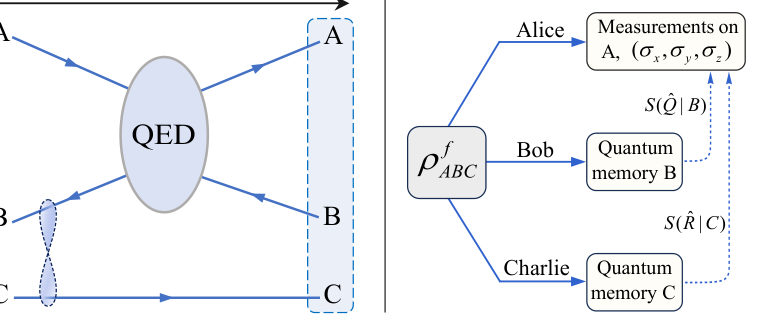
<figcaption class="paper-figure-caption"><b>Fig 1.</b> FIG. 1. Schematic illustration of entangled-spectator Bhabha scattering and the associated quantum-memory-assisted un- certainty task. Panel (a) shows the initial B-C entanglement, the Bhabha scattering between particles A and B, and the post-selected three particle state. Panel (b) depicts spin measurements on particle A, with particles B and C serving as quan- tum memories.</figcaption>
</figure>
<figure class="paper-figure-card">
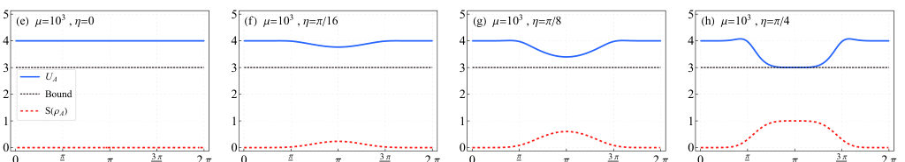
<figcaption class="paper-figure-caption"><b>Fig 2.</b> FIG. 2. Angular dependence of the memory-assisted entropic uncertainty UA and the entanglement entropy S(ρA) across the A|BC partition. The blue solid, black dashed, and red dashed curves represent UA, its lower bound UA = 3, and S(ρA), respectively. The upper [(a)–(d)] and lower [(e)–(h)] rows correspond to µ = 1 and µ = 103. From left to right, η = 0, π/16, π/8, and π/4, with β = 0 in all panels.</figcaption>
</figure>
<figure class="paper-figure-card">
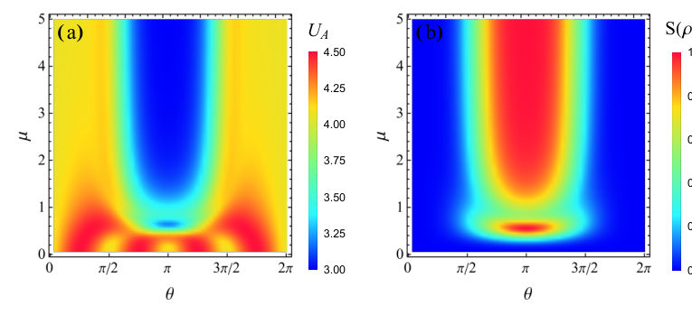
<figcaption class="paper-figure-caption"><b>Fig 3.</b> FIG. 3. Density plots of (a) the total memory-assisted uncertainty UA and (b) the entanglement entropy S(ρA) in the (θ, µ) plane for η = π/4 and β = 0. The displayed momentum range is 0 &lt; µ ≤5. The color bars are scaled independently: dark blue in panel (a) indicates values of UA close to its lower bound of 3, whereas red in panel (b) indicates values of S(ρA) close to its maximum of 1.</figcaption>
</figure>
<figure class="paper-figure-card">

<figcaption class="paper-figure-caption"><b>Fig 4.</b> Figure 4 resolves the total uncertainty UA = UB + UC into the contributions associated with the two separate memories. In the lower-momentum regime, µ = 1, both contributions vary smoothly with the scattering configuration. For η = 0, UB develops two angular minima, whereas UC shows an approximately opposite trend. Since the spectator C is then uncorrelated with A, GC = P</figcaption>
</figure>
<figure class="paper-figure-card">
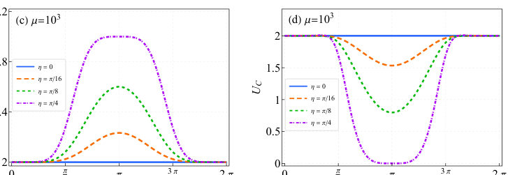
<figcaption class="paper-figure-caption"><b>Fig 5.</b> FIG. 4. Angular dependence of the memory-resolved entropic uncertainties UB and UC in Bhabha scattering with an entangled spectator. Panels (a) and (b) show UB and UC, respectively, for µ = 1; panels (c) and (d) show the corresponding results for µ = 103. The blue solid, orange dashed, green dashed, and purple dash-dotted curves correspond to η = 0, π/16, π/8, π/4, respectively. The initial phase is fixed at β = 0.</figcaption>
</figure>
</div>

<p><strong>Summary.</strong> This theoretical paper analyzes how initial entanglement between two particles (B and C) affects the measurement uncertainty of a third particle (A) during Bhabha scattering. By quantifying memory-assisted entropic uncertainty, the authors show that the spectator particle C acts as a quantum memory, whose initial entanglement can reduce the overall uncertainty in the scattering process near backscattering angles.</p>
<p><strong>Why it may be interesting.</strong> It applies advanced quantum information concepts (uncertainty relations, entanglement) to a high-energy particle physics process, providing insights into how quantum correlations govern measurement limits in scattering experiments.</p>
<details>
<summary>Detailed structure</summary>
<p><strong>Main problem.</strong> The study investigates spin-outcome correlations and memory-assisted entropic uncertainty in Bhabha scattering when one particle is initially entangled with a spectator.</p>
<p><strong>Main result.</strong> Initial entanglement between the scattering positron and the spectator can lower the total memory-assisted uncertainty in high-energy backscattering by strengthening spin-outcome correlations with the spectator.</p>
<p><strong>Method.</strong> The analysis uses quantum information diagnostics, including entanglement entropy, memory-assisted entropic uncertainty, and outcome-memory mutual information sums.</p>
<p><strong>Model / system.</strong> The system is tree-level QED Bhabha scattering ($e^-e^+ 	o e^-e^+$) where the positron (B) is initially entangled with a spectator electron (C). The analysis focuses on the post-selected three-particle scattering state.</p>
<p><strong>Key observables.</strong> Entanglement entropy $S(
ho_A)$, total memory-assisted uncertainty $U_A$, outcome-memory mutual-information sums $G_B$ and $G_C$.</p>
<p><strong>Important parameters / regimes.</strong> Initial entanglement weight $\eta$, scattering angle $ heta$, and high-energy backscattering limit ($ heta \approx \pi$).</p>
<p><strong>Assumptions / limitations.</strong> The analysis is restricted to an idealized fixed-angle post-selected spin state, and some calculations neglect forward-scattering interference terms.</p>
<p><strong>Figures summary.</strong> Figures illustrate the angular dependence of $U_A$ and $S(
ho_A)$ for varying entanglement parameters, and density plots show the relationship between these quantities in the $(	heta, \mu)$ plane.</p>
<p><strong>Paper structure.</strong> The paper develops the theoretical framework by defining the initial entangled state, calculating the relevant quantum information measures ($U_A, S(
ho_A), G_B, G_C$), and then analyzing the behavior of these measures in specific physical limits, such as high-energy backscattering.</p>
</details>
<details>
<summary>Abstract</summary>
<p>We investigate spin-outcome correlations and memory-assisted entropic uncertainty in tree-level Bhabha scattering, where an incident electron $A$ scatters with a positron $B$ initially entangled with a spectator electron $C$. For the fixed-angle post-selected final state, we compare the total memory-assisted uncertainty $U_A$ for three alternative Pauli measurements on $A$ with the entanglement entropy $S(ρ_A)$ across the $A|BC$ partition. We resolve $U_A$ into the separate uncertainties $U_B$ and $U_C$ and evaluate the corresponding outcome-memory mutual-information sums $G_B$ and $G_C$. This separates changes in the randomness of the outcomes on $A$ from changes in their correlations with each memory. In the parameter regions studied, enhanced $A|BC$ entanglement is accompanied by lower $U_A$, most prominently near high-energy backscattering. An analytic treatment of this limit shows that $B$ factorizes from $AC$: $G_B$ vanishes, whereas $G_C$ increases with the initial $B$-$C$ entanglement. An entropic complete complementarity analysis characterizes the accompanying loss of local helicity predictability in $ρ_A$ and changes in the coherence, predictability, and mixedness of the interacting pair $ρ_{AB}$. These results show that initial $B$-$C$ entanglement can lower the total memory-assisted uncertainty in high-energy backscattering by strengthening spin-outcome correlations with the spectator $C$, thereby identifying the distinct roles of the interacting particle and the spectator as quantum memories.</p>
</details>
<p><sub><a href="#top">↑ back to top</a></sub></p>

<p><a id="paper-2610.10706"></a></p>
<h3 id="symmetric-mode-ansatz-theory-of-magnon-collective-modes-in-chern-insulators"><a href="http://arxiv.org/abs/2610.10706v1">Symmetric Mode Ansatz: Theory of Magnon Collective Modes in Chern Insulators</a></h3>
<p><strong>Authors:</strong> Miguel Gonçalves, Jonah Herzog-Arbeitman, Juan Felipe Mendez-Valderrama, Andreas Feuerpfeil, B. Andrei Bernevig, Nicolas Regnault<br>
<strong>Type:</strong> theory · <strong>Category:</strong> strongly correlated electrons · <strong>PDF:</strong> <a href="https://arxiv.org/pdf/2610.10706v1">https://arxiv.org/pdf/2610.10706v1</a><br>
<strong>Analysis basis:</strong> full PDF text, analyzed in chunks
<strong>Topic relevance:</strong> <code>analog quantum simulation</code> <strong>3/5</strong></p>
<div class="figure-strip-hint">↔ Scroll figures horizontally</div>
<div class="paper-figures-scroll">
<figure class="paper-figure-card">
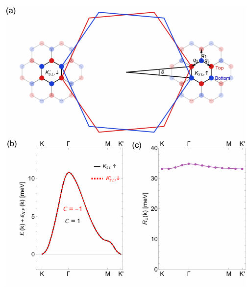
<figcaption class="paper-figure-caption"><b>Fig 1.</b> FIG. 1. Twisted Brillouin zones of the TMD bilayer, with opposite spin-polarized low-energy states at the single-layer Dirac points KSL and K′ SL related by time-reversal symmetry T . A relative twist creates a moiré Brillouin zone shown in the figure. Blue/red points represent moiré reciprocal lattice points in the bottom/top layers. (b) Single-particle dispersion in Eq. 8 for the lowest-energy hole band at KSL and K′ SL, for the FH model of MoTe2 at θ = 3.7◦. The Chern number for this band in each valley is also indicated. Note that the dispersion of ϵHF,η(k) is only 5% of the full dispersion. (c) Charge excitation energies computed using Eq. 10 for the FH model of MoTe2 at θ = 3.7◦.</figcaption>
</figure>
<figure class="paper-figure-card">
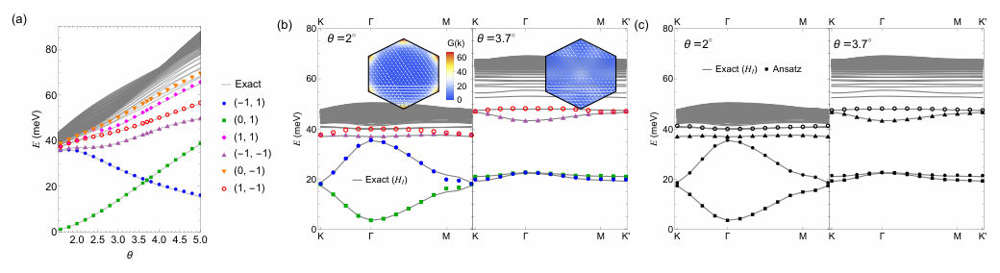
<figcaption class="paper-figure-caption"><b>Fig 2.</b> FIG. 2. Exact magnon spectrum (gray) vs. SyMA (other colors) results for the FH model of MoTe2, using the flat band Hamiltonian HI in Eq. 7 where V (q) corresponds to the double-gated Coulomb interaction. (a) Comparison between exact (gray) magnon spectrum at p = 0 with the SyMA (other colors) results of the individual modes within the different symmetry sectors (κ, ζ). (b) Comparison between exact and SyMA magnon spectrum of the individual modes computed through Eq. 27 for variable p, for the angles indicated in the figure. We exclude the modes (κ, ζ) = (1, 1); (0, −1), that are in the continuum (plots for all the modes and different angles are provided in Fig. 15 of Appendix C 6). The...</figcaption>
</figure>
<figure class="paper-figure-card">
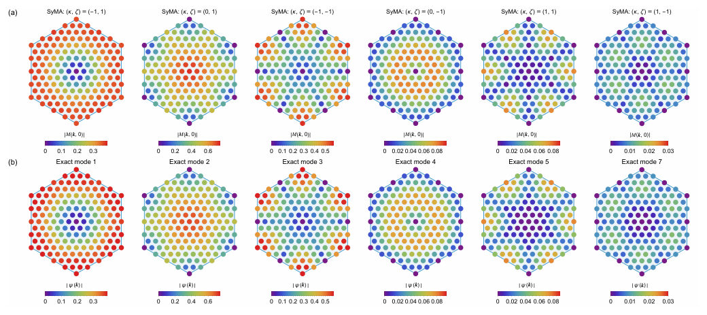
<figcaption class="paper-figure-caption"><b>Fig 3.</b> FIG. 3. Comparison between absolute values of exact and SyMA magnon eigenstates at p = 0 for the FH model of MoTe2 at θ = 3.7◦. The exact modes are ordered by increasing energy from left to right. The three lowest energy states have the smallest sum of the node degrees N: 2 (double node), 2 and 4 respectively. All the higher-energy modes have N ≥6.</figcaption>
</figure>
<figure class="paper-figure-card">
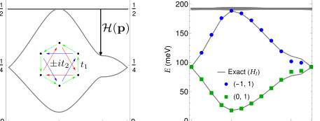
<figcaption class="paper-figure-caption"><b>Fig 4.</b> FIG. 4. (a) Magnon spectrum for the time-reversal symmet- ric Landau level limit with V0 pseudopotential (see Ref. [35] or App. E for details). (b) Exact magnon spectrum obtained for the flat band Hamiltonian HI in Eq. 7 (full gray lines) using the Hubbard interaction defined by setting V (q) = V (q = 0) in Eq. 7, for θ = 3.7◦. The blue and green points are the results for the SyMA modes defined in Sec. III A with sym- metry eigenvalues (κ, ζ) specified in the figure. (c) Magnon spectrum of the flat band Haldane model, for ratio between next-nearest-neighbor and nearest-neighbor hopping strength (see inset) of t2/t1 = 1/10. (d) Same as (b), for θ = 2◦.</figcaption>
</figure>
<figure class="paper-figure-card">
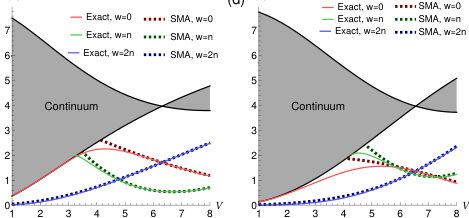
<figcaption class="paper-figure-caption"><b>Fig 5.</b> FIG. 5. (a,b) Exact magnon mode spectra obtained numer- ically for V = 4 and Λ = 10, with n = 1 (a) and n = 2 (b). Three bound states are seen. (c,d) Exact and analyti- cal SyMA results for the magnon bound modes at p = 0 for n = 1 (c) and n = 2 (d).</figcaption>
</figure>
</div>

<p><strong>Summary.</strong> This work introduces the Symmetric Mode Ansatz (SyMA) to theoretically describe the low-energy magnon excitations in Chern and fractional Chern insulators found in Moiré materials. By applying the SyMA to Hubbard models, the authors derive rigorous quantum geometric bounds on the magnon gap. This provides a powerful, unified theoretical tool for understanding magnetism stabilized by topological band structures.</p>
<p><strong>Why it may be interesting.</strong> The rigorous derivation of bounds on the magnon gap using topological invariants (Chern number, Berry curvature) connects fundamental concepts from band theory and topology to the stability of magnetic order in strongly correlated systems.</p>
<details>
<summary>Detailed structure</summary>
<p><strong>Main problem.</strong> The paper aims to clarify the nature and origin of the magnon gap in Chern insulators (CIs) and fractional Chern insulators (FCIs) stabilized by ferromagnetism in Moiré materials.</p>
<p><strong>Main result.</strong> The Symmetric Mode Ansatz (SyMA) provides a highly accurate theoretical description of the low-energy magnon spectrum, leading to quantum geometric bounds on the magnon gap.</p>
<p><strong>Method.</strong> The authors develop and apply the generalized single-mode approximation (SyMA) to the magnon Hamiltonian derived from Hubbard-type models.</p>
<p><strong>Model / system.</strong> The study focuses on Moiré materials, specifically twisted MoTe2, which host FCIs due to spontaneous time-reversal symmetry breaking. The theoretical framework is tested using Hubbard models and the First-Harmonic (FH) model.</p>
<p><strong>Key observables.</strong> Magnon spectrum/gap ($\Delta$), Chern number ($C$), Berry curvature ($F(k)$), and quantum metric ($G$).</p>
<p><strong>Important parameters / regimes.</strong> Filling fractions ($
u$), magnetic coupling strength ($U$), and the twist angle ($    heta$).</p>
<p><strong>Assumptions / limitations.</strong> The SyMA is assumed to be exact or highly accurate for certain solvable Hubbard models; approximations are made when neglecting single-particle terms in the low-energy magnon analysis.</p>
<p><strong>Figures summary.</strong> Figures compare the exact magnon spectrum against the SyMA predictions across various fillings ($
u$), showing agreement at integer filling and providing gap energy dependence on $
u$.</p>
<p><strong>Paper structure.</strong> The paper develops the SyMA theory, tests it on analytically solvable Hubbard models to derive general bounds, and then applies it to the specific FH model of MoTe2 to analyze the magnon gap across integer and fractional fillings.</p>
</details>
<details>
<summary>Abstract</summary>
<p>Moiré materials host integer and fractional Chern insulators (FCIs) where time-reversal is broken spontaneously by flat band ferromagnetism. In twisted MoTe2, unlike in quantum Hall, opposite spins carry opposite Chern numbers and realize Ising ferromagnetism with gapped magnon excitations. Clarifying the nature of these collective modes and the origin of the magnon gap is key to understanding the stability of the Chern magnets in these materials. To do so, we develop a generalized single-mode approximation, which we call the symmetric mode ansatz (SyMA), to describe the low-energy magnon spectrum. We find it to be in exceptional agreement with numerical calculations at integer filling, and qualitatively accurate across fractional fillings including FCIs. To explain the accuracy of the SyMA, we present two families of Hubbard models (including the Haldane model and continuum ideal bands) whose collective modes are analytically solvable and for which the SyMA is either exact or an accurate approximation. For a class of these models where SyMA is exact, we prove two-sided bounds on the zero-momentum magnon gap in terms of the Chern number, Berry curvature, and quantum metric, revealing that uniform quantum geometry is sufficient for stabilizing magnetism in Chern bands.</p>
</details>
<p><sub><a href="#top">↑ back to top</a></sub></p>

<p><a id="paper-2610.12294"></a></p>
<h3 id="transducing-quantum-spin-ice-correlations-into-weyl-fermi-arc-transport-at-a-synthetic-kondo-lattice-interface"><a href="http://arxiv.org/abs/2610.12294v1">Transducing quantum-spin-ice correlations into Weyl Fermi-arc transport at a synthetic Kondo lattice interface</a></h3>
<p><strong>Authors:</strong> Tsung-Chi Wu, Michael Terilli, Christian Zaprianov, Eun Sang Choi, David Graf, Qinghua Zhang, Lin Gu, Mikhail Kareev<br>
<strong>Type:</strong> experiment · <strong>Category:</strong> strongly correlated electrons · <strong>PDF:</strong> <a href="https://arxiv.org/pdf/2610.12294v1">https://arxiv.org/pdf/2610.12294v1</a><br>
<strong>Analysis basis:</strong> full PDF text, analyzed in chunks
<strong>Topic relevance:</strong> <code>analog quantum simulation</code> <strong>3/5</strong></p>
<div class="figure-strip-hint">↔ Scroll figures horizontally</div>
<div class="paper-figures-scroll">
<figure class="paper-figure-card">
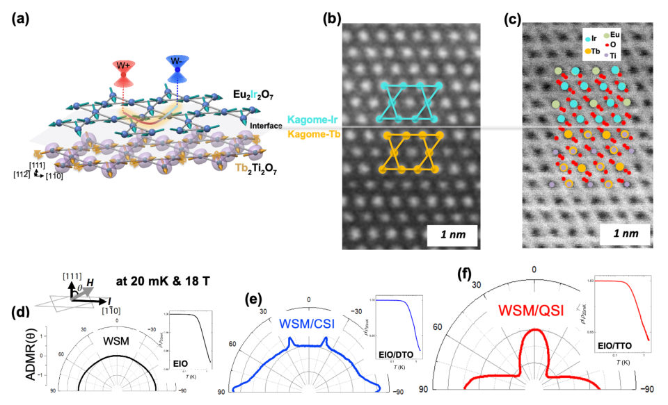
<figcaption class="paper-figure-caption"><b>Fig 1.</b> Figure 1. A synthetic Kondo lattice interface between the Weyl semimetal and quantum spin ice. a, Schematic of the (111)-oriented Eu2Ir2O7/Tb2Ti2O7 heterointerface. Surface-localized Weyl/Fermi-arc states of Eu2Ir2O7 form the itinerant electronic subsystem5,6,8, while the adjacent non-Kramers Tb kagome layer provides the frustrated local- moment subsystem; the interface therefore realizes an atomically defined two-dimensional Kondo-coupled geometry. b, High-angle annular dark-field scanning transmission electron microscopy (HAADF-STEM) atomic-column map of the pyrochlore iridate/titanate interface along the [1¯10] projection, with the Ir and Tb magnetic-sublattice motifs highlighted; scale...</figcaption>
</figure>
<figure class="paper-figure-card">
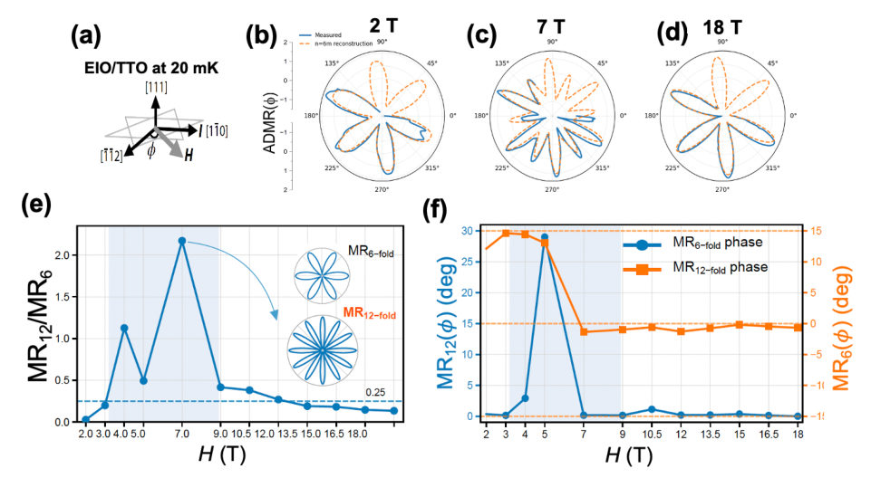
<figcaption class="paper-figure-caption"><b>Fig 2.</b> Figure 2. Transducing the quantum-spin-ice correlations into Weyl Fermi-arc transport. a, In-plane field-rotation geometry for Eu2Ir2O7/Tb2Ti2O7 at 20 mK. b–d, Representative angular magnetoresistance at 2, 7 and 18 T. Blue curves are measured data and orange dashed curves are harmonic reconstructions of the measured sector, illustrating the evolution from sixfold to twelvefold-rich and back to sixfold anisotropy. ADMR(𝜙) = [𝜌𝑥𝑥(𝜙, 𝐻) −𝜌𝑥𝑥(0◦, 𝐻)]/𝜌𝑥𝑥(0◦, 𝐻), with 𝐻rotating within the (111) plane. e, Relative harmonic weight MR12/MR6 versus field. The shaded interval highlights the intermediate-field reconstruction; the dashed line at 0.25 marks the minimal two-harmonic scale at which...</figcaption>
</figure>
<figure class="paper-figure-card">
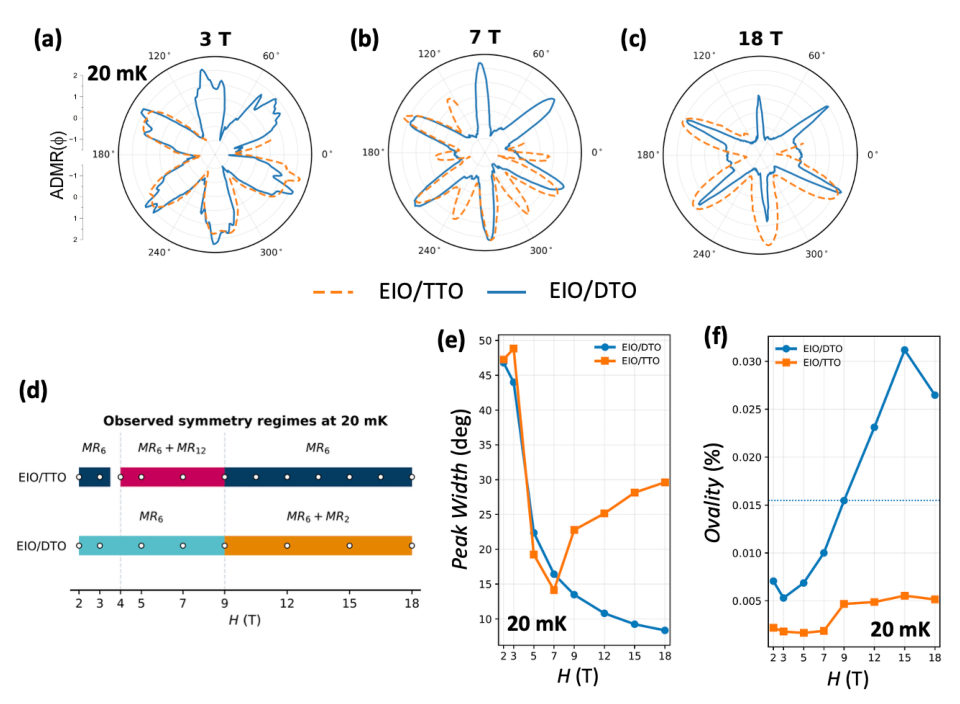
<figcaption class="paper-figure-caption"><b>Fig 3.</b> Figure 3. Quantum and classical spin ice produce distinct symmetry-transduction trajectories. a–c, Angular magnetoresistance of Eu2Ir2O7/Tb2Ti2O7 (orange dashed) and Eu2Ir2O7/Dy2Ti2O7 (blue) at 20 mK and 3, 7 and 18 T. Only the Tb2Ti2O7-coupled interface develops the intermediate-field twelvefold reconstruction, whereas the high-field Dy2Ti2O7-coupled response sharpens and develops a pronounced twofold baseline distortion, consistent with the previously established classical-interface evolution.18,20,21 d, Observed transport-symmetry regimes. Open circles mark measured fields; the narrow low-to-intermediate-field crossover in Tb2Ti2O7 is left unassigned. The ribbons summarize the dominant...</figcaption>
</figure>
</div>

<p><strong>Summary.</strong> The authors demonstrate a novel method to probe quantum-spin-ice correlations by coupling them to Weyl semimetal surface states via a synthetic Kondo lattice interface. By measuring the angular magnetoresistance, they observe a unique twelvefold symmetry reconstruction only when coupled to a quantum spin-ice candidate ($ ext{Tb}_2   ext{Ti}_2   ext{O}_7$). This confirms that the electronic transport acts as a sensitive transducer for the underlying multipolar quantum magnetic order.</p>
<p><strong>Why it may be interesting.</strong> This work provides a highly tunable, solid-state platform to probe exotic quantum magnetic correlations (multipolar moments) by mapping them onto measurable electronic transport symmetries, which is relevant for understanding strongly correlated interfacial physics.</p>
<details>
<summary>Detailed structure</summary>
<p><strong>Main problem.</strong> The study aims to demonstrate a method to encode and detect quantum-spin-ice correlations, particularly those involving multipolar degrees of freedom, into measurable electronic transport properties.</p>
<p><strong>Main result.</strong> The quantum-spin-ice interface ($  ext{Tb}_2   ext{Ti}_2   ext{O}_7$) exhibits a unique $  ext{6-fold}     o   ext{12-fold}    o   ext{6-fold}$ reentrant anisotropy in the angular magnetoresistance, a signature absent in the classical spin-ice reference ($   ext{Dy}_2   ext{Ti}_2   ext{O}_7$).</p>
<p><strong>Method.</strong> The research uses in-plane and out-of-plane angular magnetoresistance measurements on a synthetic Kondo lattice interface at ultra-low temperatures.</p>
<p><strong>Model / system.</strong> The platform is a synthetic Kondo lattice interface formed between a Weyl semimetal ($  ext{Eu}_2   ext{Ir}_2   ext{O}_7$) and a quantum-spin-ice candidate ($ ext{Tb}_2   ext{Ti}_2   ext{O}_7$), allowing the coupling of itinerant Weyl surface states to frustrated local moments.</p>
<p><strong>Key observables.</strong> Angular magnetoresistance ($   ext{MR}$), specifically the symmetry reconstruction observed as a transition from sixfold to twelvefold anisotropy ($  ext{MR}_{12}/   ext{MR}_6$).</p>
<p><strong>Important parameters / regimes.</strong> Ultra-low temperatures ($   ext{20 mK}$), varying magnetic field strength, and the comparison between quantum ($   ext{Tb}$) and classical ($  ext{Dy}$) spin-ice couplings.</p>
<p><strong>Assumptions / limitations.</strong> The electronic transport is sensitive to the specific magnetic degrees of freedom (dipolar vs. multipolar) present in the adjacent spin-ice material.</p>
<p><strong>Figures summary.</strong> Figures illustrate the structural interface, the field evolution of angular magnetoresistance showing the $    ext{6-fold}     o   ext{12-fold}    o   ext{6-fold}$ sequence for the quantum case, and direct comparisons with the classical case.</p>
<p><strong>Paper structure.</strong> The paper establishes the physical system, details the measurement techniques (ADMR), presents the key comparative results showing the distinct symmetry signatures ($ ext{12-fold}$ vs. $ ext{2-fold}$), and concludes by establishing the synthetic Kondo lattice as a transduction route.</p>
</details>
<details>
<summary>Abstract</summary>
<p>Quantum spin ice hosts collective excitations and quantum fluctuations that are largely electrically silent because the materials supporting them are insulating. Coupling this magnetic environment to surface-localized Weyl states offers a route to encode its correlations directly into Fermi-arc transport. Experimental access to this regime, however, has remained largely unexplored. Here, we realize a synthetic Kondo lattice interface between the Weyl semimetal $\mathrm{Eu_2Ir_2O_7}$ and the quantum-spin-ice candidate $\mathrm{Tb_2Ti_2O_7}$, and demonstrate that quantum-spin-ice correlations are imprinted on Weyl Fermi-arc transport. At ultra-low temperature, electronic transport evolves from a sixfold anisotropic response at low field into a twelvefold response over an intermediate field window, before entering a reentrant sixfold anisotropy at high field. No analogous twelvefold response occurs at the classical-spin-ice interface. The quantum--classical contrast shows that the same itinerant electronic channel acquires qualitatively different symmetry information when interacting with the quantum-fluctuating Tb moments, consistent with an interfacial coupling between the Weyl surface states and the transverse, multipolar degrees of freedom, in addition to the longitudinal, dipolar contribution. Our work establishes synthetic Kondo lattice interfaces as a route for transducing frustrated quantum magnetism with multipole correlations into distinct Weyl Fermi-arc transport responses.</p>
</details>
<p><sub><a href="#top">↑ back to top</a></sub></p>

<p><a id="paper-2610.10769"></a></p>
<h3 id="reconstruction-of-black-hole-islands-from-hawking-radiation-via-the-algebraic-petz-map"><a href="http://arxiv.org/abs/2610.10769v1">Reconstruction of Black Hole Islands from Hawking Radiation via the Algebraic Petz Map</a></h3>
<p><strong>Authors:</strong> Niloofar Vardian<br>
<strong>Type:</strong> theory · <strong>Category:</strong> other · <strong>PDF:</strong> <a href="https://arxiv.org/pdf/2610.10769v1">https://arxiv.org/pdf/2610.10769v1</a><br>
<strong>Analysis basis:</strong> full PDF text, analyzed in chunks
<strong>Topic relevance:</strong> <code>Keldysh / 2PI / non-Gaussian methods</code> <strong>2/5</strong> · <code>quantum measurements</code> <strong>2/5</strong> · <code>analog quantum simulation</code> <strong>1/5</strong> · <code>correlated / nonlocal dissipation</code> <strong>1/5</strong> · <code>driven-dissipative phase transition</code> <strong>1/5</strong> · <code>methods for driven-dissipative</code> <strong>1/5</strong> · <code>non-equilibrium universality</code> <strong>1/5</strong></p>
<div class="figure-strip-hint">↔ Scroll figures horizontally</div>
<div class="paper-figures-scroll">
<figure class="paper-figure-card">
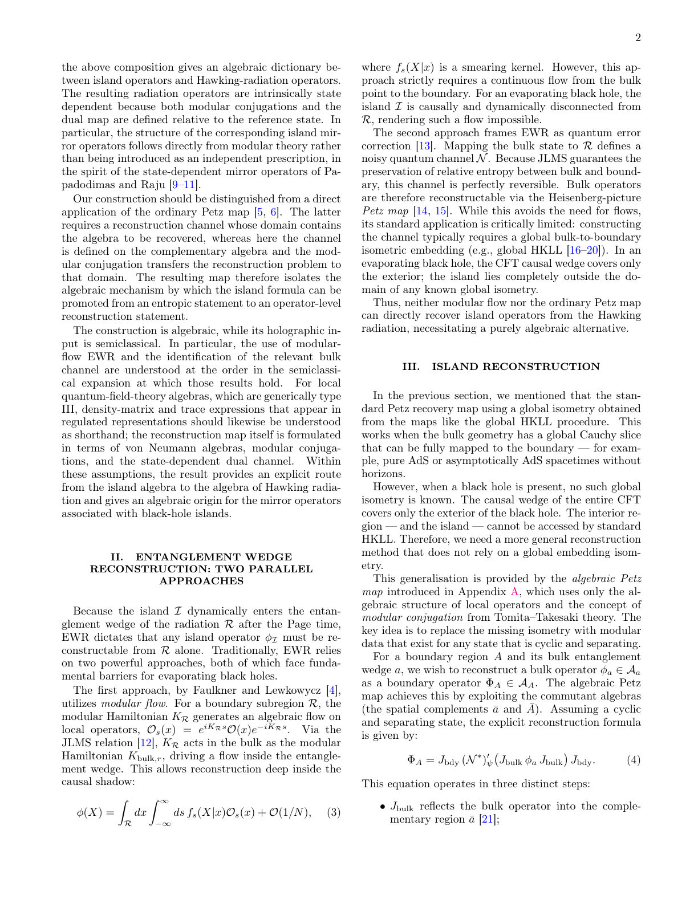
<figcaption class="paper-figure-caption"><b>Fig 1.</b> Low-resolution page preview, page 2</figcaption>
</figure>
<figure class="paper-figure-card">
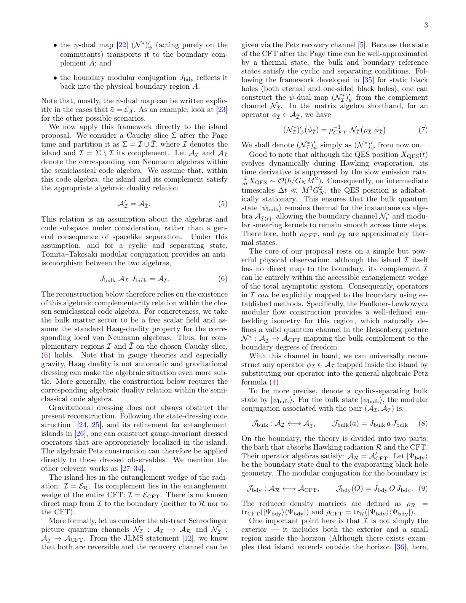
<figcaption class="paper-figure-caption"><b>Fig 2.</b> Low-resolution page preview, page 3</figcaption>
</figure>
<figure class="paper-figure-card">
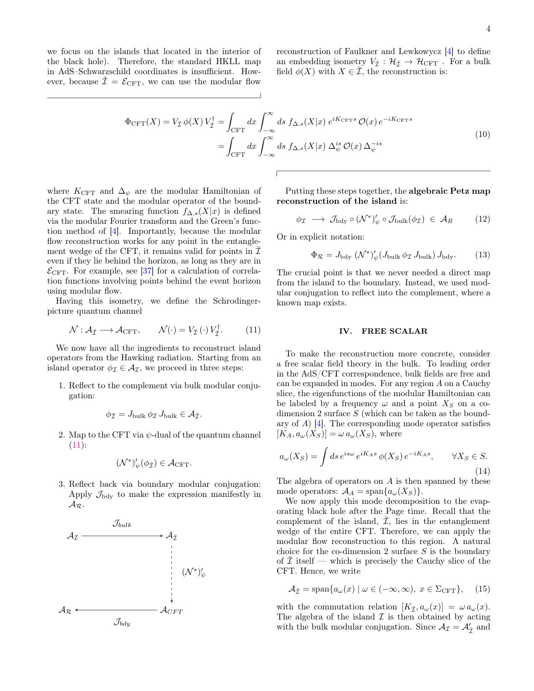
<figcaption class="paper-figure-caption"><b>Fig 3.</b> Low-resolution page preview, page 4</figcaption>
</figure>
<figure class="paper-figure-card">
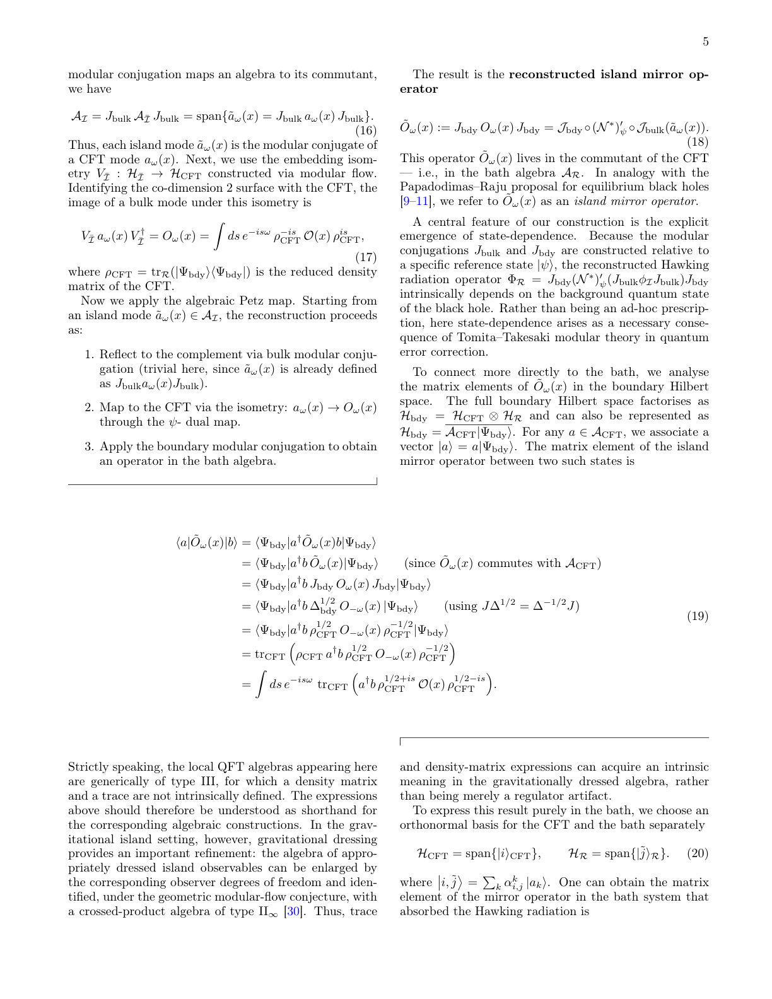
<figcaption class="paper-figure-caption"><b>Fig 4.</b> Low-resolution page preview, page 5</figcaption>
</figure>
<figure class="paper-figure-card">
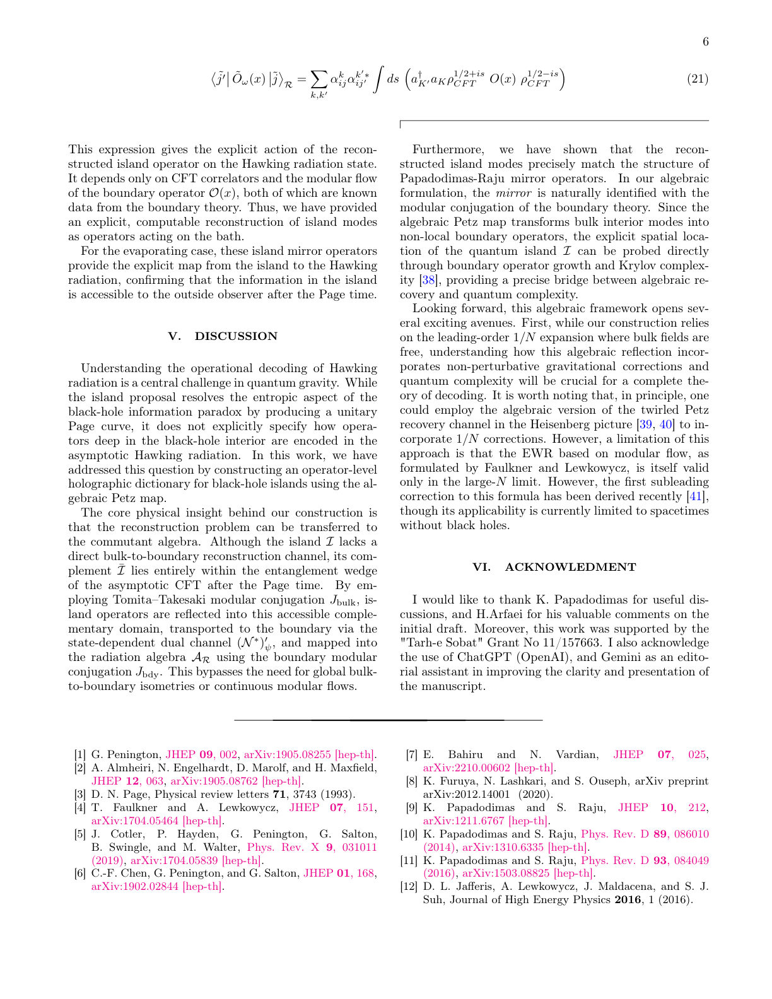
<figcaption class="paper-figure-caption"><b>Fig 5.</b> Low-resolution page preview, page 6</figcaption>
</figure>
</div>

<p><strong>Summary.</strong> This paper solves a major theoretical hurdle in quantum gravity by developing the algebraic Petz map to reconstruct information trapped inside a black hole's 'island' from Hawking radiation. It achieves this by leveraging advanced tools from modular theory, bypassing the need for direct causal connections between the interior and the exterior. The result provides a concrete, computable dictionary proving that black hole information is preserved and accessible.</p>
<p><strong>Why it may be interesting.</strong> While focused on gravity, the reliance on modular theory, algebraic reconstruction, and the mapping between different quantum algebras provides deep mathematical tools applicable to open quantum systems and entanglement structure in general.</p>
<details>
<summary>Detailed structure</summary>
<p><strong>Main problem.</strong> The paper addresses the black hole information paradox by providing an operational, algebraic method to reconstruct quantum operators trapped inside a black hole's 'island' from measurable Hawking radiation.</p>
<p><strong>Main result.</strong> The authors construct a rigorous dictionary using the algebraic Petz map, demonstrating that information inside the black hole is mathematically recoverable from the asymptotic radiation.</p>
<p><strong>Method.</strong> The reconstruction relies on Tomita–Takesaki modular theory, mapping the island operators to their algebraic complement, and then using a sequence of modular conjugations and a $
ho$-dual map to project them onto the radiation algebra.</p>
<p><strong>Model / system.</strong> The system is an evaporating black hole coupled to a non-gravitating bath, analyzed using the framework of quantum field theory in curved spacetime and holographic duality (AdS/CFT).</p>
<p><strong>Key observables.</strong> Island operators ($\phi_I$), Hawking radiation operators ($\Phi_R$), and the resulting reconstructed mirror operators ($\Phi_A$).</p>
<p><strong>Important parameters / regimes.</strong> The Page time, the large-$N$ limit, and the background quantum state $|\psi_g
angle$.</p>
<p><strong>Assumptions / limitations.</strong> The method assumes the relevant state is cyclic and separating, and it relies on the algebraic duality relation $A'_I = ar{A}_I$ to bypass the need for a direct global isometry.</p>
<p><strong>Paper structure.</strong> The paper builds the reconstruction protocol by first establishing the failure of standard entanglement wedge methods, then introducing the algebraic Petz map via modular theory, and finally demonstrating its application to yield the mirror operator structure.</p>
</details>
<details>
<summary>Abstract</summary>
<p>The island proposal guarantees a unitary Page curve for evaporating black holes, implying that operators deep behind the horizon must be fully reconstructable from asymptotic Hawking radiation. However, because the interior is causally disconnected and highly dynamical, standard entanglement wedge reconstruction methods, relying on global isometries or continuous modular flow, fail to provide this mapping. We resolve this by constructing a protocol for island reconstruction using the algebraic Petz map. By using modular theory, we reflect island operators into the accessible complement, transport them to the boundary, and map them into the radiation algebra. Furthermore, we demonstrate that this purely algebraic derivation naturally yields the structure of Papadodimas-Raju mirror operators. This framework provides a rigorous operational dictionary for the island formula, proving that information trapped inside a black hole can be decoded.</p>
</details>
<p><sub><a href="#top">↑ back to top</a></sub></p>

<p><a id="paper-2610.11970"></a></p>
<h3 id="mutual-linearity-of-complexes-in-chemical-reaction-networks"><a href="http://arxiv.org/abs/2610.11970v1">Mutual Linearity of Complexes in Chemical Reaction Networks</a></h3>
<p><strong>Authors:</strong> Pedro E. Harunari, Guilherme Fiusa, Matteo Polettini<br>
<strong>Type:</strong> theory · <strong>Category:</strong> statistical mechanics · <strong>PDF:</strong> <a href="https://arxiv.org/pdf/2610.11970v1">https://arxiv.org/pdf/2610.11970v1</a><br>
<strong>Analysis basis:</strong> full PDF text, analyzed in chunks
<strong>Topic relevance:</strong> <code>analog quantum simulation</code> <strong>2/5</strong> · <code>Keldysh / 2PI / non-Gaussian methods</code> <strong>1/5</strong> · <code>correlated / nonlocal dissipation</code> <strong>1/5</strong> · <code>driven-dissipative phase transition</code> <strong>1/5</strong> · <code>methods for driven-dissipative</code> <strong>1/5</strong> · <code>non-equilibrium universality</code> <strong>1/5</strong></p>
<div class="figure-strip-hint">↔ Scroll figures horizontally</div>
<div class="paper-figures-scroll">
<figure class="paper-figure-card">
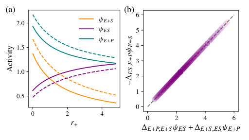
<figcaption class="paper-figure-caption"><b>Fig 1.</b> FIG. 1. Reversible Michaelis-Menten. (a) Activities of all complexes as function of the perturbed rate constant r+, with r−= 1 in solid lines and 2 in dashed lines. (b) Products of ∆s and ψs that should be equal due to mutual linearity, sampled in a 2D grid of r± ∈[0, 5]; the dashed line is y = x. The initial concentration of all species is 1, (k+2, k−2, k+3, k−3) = (1.2, 0.7, 1.1, 2), and k±1 = r± are controlled.</figcaption>
</figure>
<figure class="paper-figure-card">
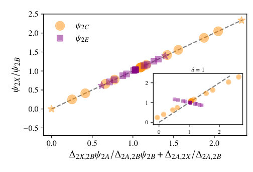
<figcaption class="paper-figure-caption"><b>Fig 2.</b> FIG. 2. Mutual linearity witnessed in the ratio of 2C (orange circles) and 2E (purple squares) with respect to 2B. The dashed gray line is y = x, and the stars represent the bounds from Eq. (11). The rate con- stants of 2C ⇌2D are swept from 0 to 10; the initial concentrations are respectively {1, 2, 3, 1.1, 2.4}; the rate constants are k±1 = {1.2, 1}, k±2 = {1.3, 1.1}, k±4 = {1.5, 1.3}, k±5 = {1.6, 1.4}, k±6 = {1.7, 1.5}, and k±7 = {1.8, 1.6}. The inset has complex 2E replaced by A + B: same reaction topology, same rate constants, but deficiency δ = 1.</figcaption>
</figure>
</div>

<p><strong>Summary.</strong> This work establishes a powerful structural property called 'mutual linearity' for the activities of complexes in chemical reaction networks. It proves that this linearity holds exactly, even far from equilibrium, provided the network has zero deficiency. This relationship serves as a powerful diagnostic tool, as its violation signals structural flaws like non-zero deficiency.</p>
<p><strong>Why it may be interesting.</strong> While focused on classical chemical kinetics, the mathematical machinery—relating structural invariants (deficiency) to algebraic constraints (linearity)—is highly relevant to understanding constraints in open quantum systems or quantum field theories where non-equilibrium steady states are studied.</p>
<details>
<summary>Detailed structure</summary>
<p><strong>Main problem.</strong> The paper investigates finding exact, non-linear relationships (mutual linearity) describing how a system far from equilibrium responds to changes in its reaction rate constants.</p>
<p><strong>Main result.</strong> Mutual linearity holds not for species concentrations, but for the activities of the reaction complexes ($\psi_c$), yielding a three-term linear relation independent of the controlled rate constants.</p>
<p><strong>Method.</strong> The proof utilizes concepts from Markov chain theory, specifically analyzing the coplanarity of spanning-tree polynomials derived from the complex-space Laplacian.</p>
<p><strong>Model / system.</strong> The system is Chemical Reaction Networks (CRNs) operating under mass-action kinetics, analyzed in the context of jump processes and complex-balance equations.</p>
<p><strong>Key observables.</strong> Stationary activities of complexes ($\psi_c$), which are mass-action monomials; the relationship $\Delta_{bc}\psi_a + \Delta_{ca}\psi_b + \Delta_{ab}\psi_c = 0$.</p>
<p><strong>Important parameters / regimes.</strong> Zero deficiency ($\delta=0$) and the condition of having a single linkage class are crucial structural requirements for the theorem to hold.</p>
<p><strong>Assumptions / limitations.</strong> The analysis assumes the network is zero-deficiency and that the controlled reaction is bidirectional and not a bridge.</p>
<p><strong>Figures summary.</strong> Figure 1 illustrates the theorem using a Michaelis-Menten cycle, showing the linear collapse of the mutual linearity product. Figure 2 demonstrates the relation holding for a complex network and its violation when the deficiency increases.</p>
<p><strong>Paper structure.</strong> The paper establishes the problem of non-equilibrium response, proves the existence of mutual linearity in complex activities for specific network structures, derives the general linear relation, and uses this relation to test structural invariants like network deficiency.</p>
</details>
<details>
<summary>Abstract</summary>
<p>Exact statements about how a system far from equilibrium responds to changes in its rate constants are scarce beyond linear response, yet they are central to the control of biochemical networks. A notable exception is mutual linearity: in a jump process, controlling the rates of a single transition makes any two stationary probabilities obey an exact affine relation, arbitrarily far from equilibrium. With nonlinear mass-action kinetics, and conservation laws in place of a normalization, chemical reaction networks seem to defy mutual linearity since species concentrations obey no such relation. We show that it was there all along, in the complexes' activities (mass-action monomials) rather than in the concentrations of species. For zero-deficiency networks with a single linkage class, controlling one reaction makes any three stationary activities obey a linear relation whose coefficients are independent of the controlled rate constants, the conserved quantities (hence the initial state), and even of the stoichiometry of complexes. This predicts hidden activities and bounds the activity ratios the control can reach, while a violation signals nonzero deficiency or multiple linkage classes.</p>
</details>
<p><sub><a href="#top">↑ back to top</a></sub></p>

<p><a id="paper-2610.11644"></a></p>
<h3 id="from-solid-state-spin-defects-to-fluorescent-proteins-a-perspective-on-quantum-optical-sensing-platforms-for-biomedical-applications"><a href="http://arxiv.org/abs/2610.11644v1">From Solid-State Spin Defects to Fluorescent Proteins: A Perspective on Quantum Optical Sensing Platforms for Biomedical Applications</a></h3>
<p><strong>Authors:</strong> Jyotiprakash Parhi, Ayan Majumder, Kasturi Saha<br>
<strong>Type:</strong> theory · <strong>Category:</strong> other · <strong>PDF:</strong> <a href="https://arxiv.org/pdf/2610.11644v1">https://arxiv.org/pdf/2610.11644v1</a><br>
<strong>Analysis basis:</strong> full PDF text, analyzed in chunks
<strong>Topic relevance:</strong> <code>quantum measurements</code> <strong>2/5</strong> · <code>QC/QI experiment</code> <strong>1/5</strong> · <code>analog quantum simulation</code> <strong>1/5</strong> · <code>driven-dissipative phase transition</code> <strong>1/5</strong> · <code>quantum optics experiment</code> <strong>1/5</strong></p>
<div class="figure-strip-hint">↔ Scroll figures horizontally</div>
<div class="paper-figures-scroll">
<figure class="paper-figure-card">
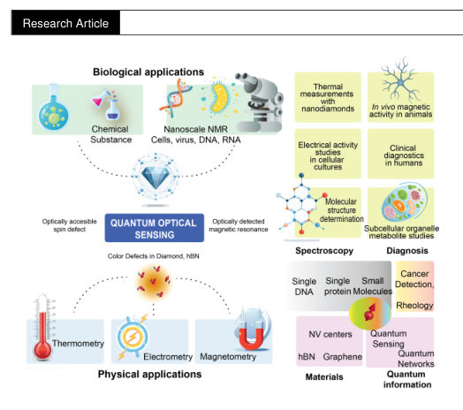
<figcaption class="paper-figure-caption"><b>Fig 1.</b> Fig. 1. Schematic overview of optically accessible spin defects as quantum sensor: from the nitrogen-vacancy center in di- amond to hexagonal boron nitride. The applications range from physical sensing modalities to advanced spectroscopic techniques. The biocompatibility extends the capability from radical detection, chemical substance analysis, and rheology to nanoscale NMR of DNA, RNA, viruses, and in cellular envi- ronments. The schematic illustrates the versatility of quantum sensors in enabling a wide range of applications, spanning from biomedical research to quantum information technolo- gies.</figcaption>
</figure>
<figure class="paper-figure-card">
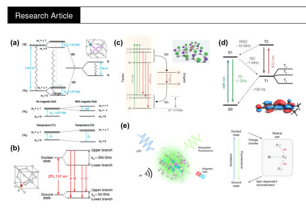
<figcaption class="paper-figure-caption"><b>Fig 2.</b> Fig. 2. (a) Electronic structure of the NV−center in diamond, showing triplet ground and excited states coupled by opti- cal transitions and intersystem crossing (ISC) via singlets, enabling spin polarization and spin-dependent photolumi- nescence; magnetic-field and temperature effects are indicated (inset: atomic structure). Adapted from Refs. [11, 21]. (b) SiV−</figcaption>
</figure>
<figure class="paper-figure-card">
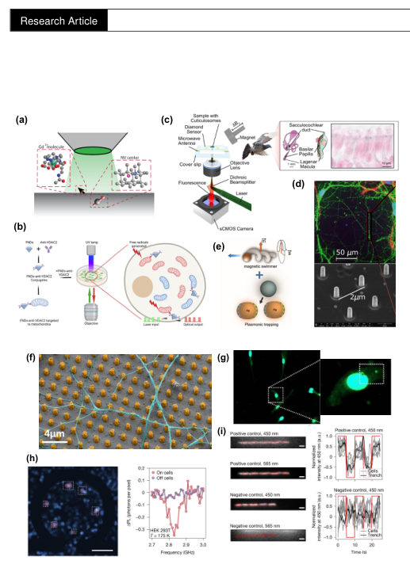
<figcaption class="paper-figure-caption"><b>Fig 3.</b> Fig. 3. (a) Single-molecule electron spin detection using a single shallow NV center in bulk diamond. Adapted from Ref. [45] (b)Schematic of NDs and the conjugation to anti-body VDAC2 for targeting mitochondria. Adapted from Ref. [46]. (c) (left) Overview of the design of the experiment. (right) Details of the biological sample of interest (pigeon ear and cochlea). Adapted from Ref. [47] (d) (up) Confocal image of the stained neurons (green) grown on a bed of nanopillars. (down) SEM image of diamond nanopillars. Adapted from Ref. [48]. (e) Magnetically actuated mobile nanotweezers used for controlled transport and manipulation of nanoscale objects, illustrating an auxiliary approach for...</figcaption>
</figure>
<figure class="paper-figure-card">
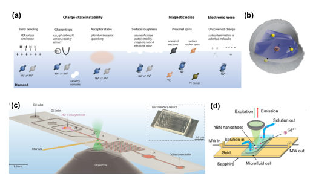
<figcaption class="paper-figure-caption"><b>Fig 4.</b> Fig. 4. (a) Summary of sources of charge-state instability and decoherence for near-surface NV centers. Adapted from Ref. [86] (b) Schematic depiction of a core-shell structured di- amond nanocrystal with NV qubit (orange) in the diamond host blue. Surface spins are indicated in yellow. Adapted from Ref. [42] (c) Schematic of microfluidic chip comprising two inlets for oil and water (gray circles). J1 generates ND-filled water droplets, and J2 regulates droplet spacing. (region a): droplets are analyzed, (region b): additional mixing within droplets, (region c): collection chamber. (inset): photograph of the chip. Adapted from Ref. [82] (d) Schematic of experimental setup: an hBN nanosheet...</figcaption>
</figure>
</div>

<p><strong>Summary.</strong> This review surveys the field of quantum optical sensing, detailing the shift from solid-state quantum emitters like NV centers to bio-integrated systems using fluorescent proteins. It highlights the advanced techniques used to measure physical parameters like temperature and magnetic fields at the nanoscale. The paper emphasizes that while progress is rapid, overcoming environmental noise and ensuring scalability remain key challenges for clinical translation.</p>
<p><strong>Why it may be interesting.</strong> This work is highly relevant as it bridges quantum optics and condensed matter physics into a tangible application domain (biomedicine), requiring deep knowledge of open quantum systems, decoherence mechanisms, and solid-state defect physics.</p>
<details>
<summary>Detailed structure</summary>
<p><strong>Main problem.</strong> The paper reviews the evolution of quantum optical sensing platforms, tracking the transition from isolated solid-state spin defects to bio-integrated systems for biomedical applications.</p>
<p><strong>Main result.</strong> Significant progress has been made in integrating quantum sensors, utilizing platforms like NV centers, SiV centers, and fluorescent proteins, for nanoscale measurements in complex biological environments.</p>
<p><strong>Method.</strong> The review synthesizes various experimental techniques, including Optically Detected Magnetic Resonance (ODMR), T1 relaxometry, and specialized readout methods like OADF, applied across different physical systems.</p>
<p><strong>Model / system.</strong> The core systems discussed are solid-state spin defects (e.g., NV centers in diamond, $ ext{V}_{    ext{B}}^-$ in hBN) and engineered biological systems (fluorescent proteins). These platforms are used to probe local fields like temperature, strain, and magnetic fields.</p>
<p><strong>Key observables.</strong> Temperature, strain, electric fields, magnetic fields, longitudinal relaxation time ($T_1$), and spin-photon interactions.</p>
<p><strong>Important parameters / regimes.</strong> Room temperature operation, nanometer-scale resolution, and coherence time in aqueous environments.</p>
<p><strong>Assumptions / limitations.</strong> The primary challenge is maintaining quantum coherence and reliable sensing functionality when moving from controlled solid-state environments to complex, noisy biological media.</p>
<p><strong>Figures summary.</strong> Figures schematically illustrate the various optically accessible spin defects (NV to hBN) and their diverse applications, ranging from radical detection to nanoscale NMR.</p>
<p><strong>Paper structure.</strong> The paper is structured as a perspective review, first establishing the historical progression of quantum sensing platforms, detailing the physics and advances in solid-state defects, then covering the integration into bio-compatible systems, and finally summarizing current challenges and future outlook.</p>
</details>
<details>
<summary>Abstract</summary>
<p>Quantum optical sensing has evolved from isolated solid state spin defect platforms to increasingly bio-integrated systems designed for biomedical applications. This review presents a perspective on this transition, spanning nitrogen vacancy centers in diamond to emerging fluorescent protein based spin qubits. Advances in diamond fabrication have enabled photonic cavities, nanomechanical resonators, and microstructured devices that enhance spin photon interactions and room temperature sensitivity. Exploration of spin defects in alternative materials further expands the sensing landscape. Parallel progress toward biological compatibility includes chip based architectures for in vitro and in vivo studies, microfluidic integration, and minimally invasive nanodiamond probes capable of intracellular nanothermometry and nanorheometry. Improvements in surface functionalization have enhanced coherence and sensing reliability in complex environments. Collectively, these advances highlight the progress and remaining challenges toward application oriented quantum sensing for the life sciences.</p>
</details>
<p><sub><a href="#top">↑ back to top</a></sub></p>

<p><a id="paper-2610.11686"></a></p>
<h3 id="non-perturbative-vibrational-excitation-by-arbitrary-electric-fields-from-classical-phase-space-dynamics"><a href="http://arxiv.org/abs/2610.11686v1">Non-Perturbative Vibrational Excitation by Arbitrary Electric Fields from Classical Phase-Space Dynamics</a></h3>
<p><strong>Authors:</strong> Sameernandan Upadhyayula, Jiří J. L. Vaníček<br>
<strong>Type:</strong> theory · <strong>Category:</strong> other · <strong>PDF:</strong> <a href="https://arxiv.org/pdf/2610.11686v1">https://arxiv.org/pdf/2610.11686v1</a><br>
<strong>Analysis basis:</strong> full PDF text, analyzed in chunks
<strong>Topic relevance:</strong> <code>Keldysh / 2PI / non-Gaussian methods</code> <strong>2/5</strong> · <code>methods for driven-dissipative</code> <strong>2/5</strong> · <code>quantum measurements</code> <strong>2/5</strong></p>
<div class="figure-strip-hint">↔ Scroll figures horizontally</div>
<div class="paper-figures-scroll">
<figure class="paper-figure-card">
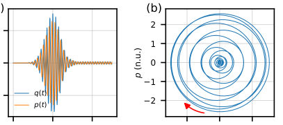
<figcaption class="paper-figure-caption"><b>Fig 1.</b> FIG. 2. (a) Time evolution of position and momentum under a non-resonant electric field. (b) The corresponding phase- space trajectory, showing a clockwise evolution (red arrow indicates direction) but with no clear order in the structure of phase space. The parameters are the same as in Fig. 1 except that ω = 0.83 n.u. (&lt; ω0). In this case, |θ−|σ = 3.4 is not very large, and therefore the trajectories show residual oscillations. The amplitude of q and p in the long-time limit obtained from the numerical evaluation is 0.0774 n.u., which agrees with Eq. (14).</figcaption>
</figure>
<figure class="paper-figure-card">
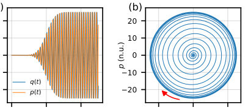
<figcaption class="paper-figure-caption"><b>Fig 2.</b> FIG. 1. (a) Time evolution of position and momentum under a resonant electric field. (b) The corresponding phase-space trajectory showing a clockwise evolution (red arrow indicates the direction of motion). We perform the calculations in nat- ural units (n.u.) such that ℏ= µ′ 0 = ω0 = 1, µ0 = 0. The parameters of the electric field are E0 = ω = 1 n.u., φ = 0, and σ = 20 n.u.. The initial point is (q0, p0) = (0, 0). The asymptotic amplitude of q and p in the long-time limit ob- tained from the numerical evaluation is 25.066 n.u., which agrees with Eq. (13).</figcaption>
</figure>
<figure class="paper-figure-card">
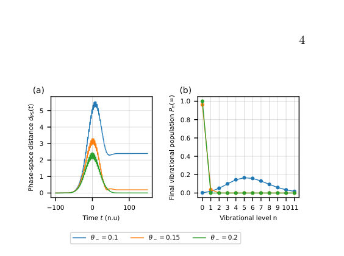
<figcaption class="paper-figure-caption"><b>Fig 3.</b> FIG. 4. (a) Time evolution of the phase-space distance dPS(t) in the non-resonant case for different values of the detuning parameter θ−= |ω −ω0|. (b) Corresponding final vibrational population distribution over number states. All parameters are identical to Fig. 2, except for the frequency of the pulse, which is varied in order to vary detuning.</figcaption>
</figure>
<figure class="paper-figure-card">
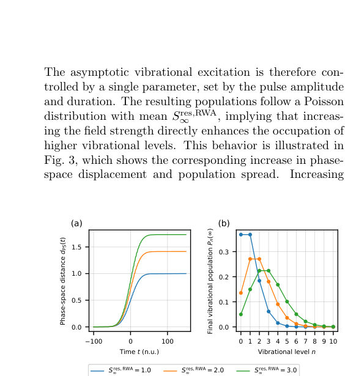
<figcaption class="paper-figure-caption"><b>Fig 4.</b> FIG. 3. (a) Time evolution of the phase-space distance dPS(t) for different values of Sres,RWA ∞ under resonant driving. (b) Corresponding final vibrational population distribution over number states. All parameters are identical to Fig. 1 except for the amplitude E0, which is varied to control Sres,RWA ∞ .</figcaption>
</figure>
<figure class="paper-figure-card">
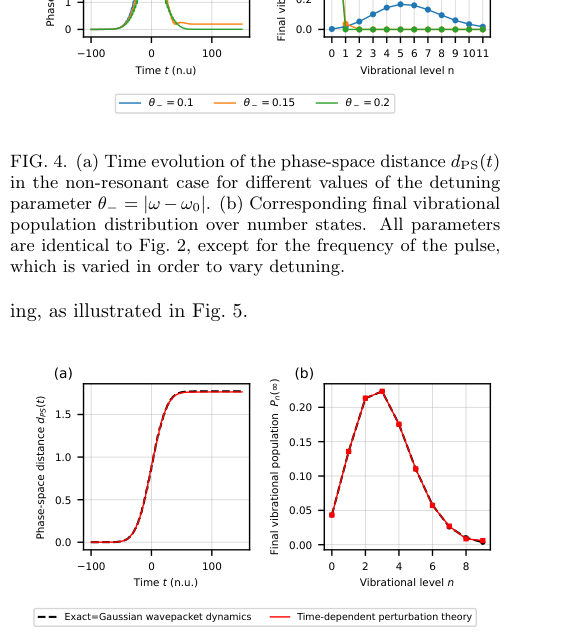
<figcaption class="paper-figure-caption"><b>Fig 5.</b> FIG. 5. Comparison between time-dependent perturbation theory and Gaussian wavepacket dynamics in the weak-field limit under resonant driving. (a) Time evolution of the phase- space distance. (b) Final vibrational populations. The pa- rameters used for the calculations are the same as in Fig. 1, except E0 = 0.1 n.u.</figcaption>
</figure>
</div>

<p><strong>Summary.</strong> This paper introduces a non-perturbative method to model how molecular vibrations are excited by strong, time-varying electric fields. By mapping the dynamics onto a complex phase-space coordinate, the authors provide a unified description that accurately predicts vibrational populations in both resonant and non-resonant regimes. This framework is crucial for understanding and controlling molecular energy transfer in intense light fields.</p>
<p><strong>Why it may be interesting.</strong> This work provides a powerful, non-perturbative phase-space picture for controlling molecular vibrations using intense light fields, which is central to ultrafast spectroscopy and quantum control.</p>
<details>
<summary>Detailed structure</summary>
<p><strong>Main problem.</strong> Developing a non-perturbative quantum framework to describe vibrational excitation in molecular systems driven by arbitrarily time-dependent external electric fields.</p>
<p><strong>Main result.</strong> The dynamics are exactly mapped onto the evolution of a complex phase-space coordinate, yielding a Poisson distribution for vibrational populations that correctly captures both resonant enhancement and non-resonant suppression.</p>
<p><strong>Method.</strong> The authors utilize an exact coherent-state solution for the driven harmonic oscillator, allowing the analysis to remain valid in the strong-field regime where standard time-dependent perturbation theory fails.</p>
<p><strong>Model / system.</strong> The system models a single normal mode of a molecule with a harmonic potential and a linear dipole coupling ($\mu(q) = \mu_0 + \mu'_0 T \cdot q$) interacting with an external electric field $\vec{E}(t)$.</p>
<p><strong>Key observables.</strong> Vibrational populations ($P_n(t)$), the time-dependent phase-space displacement ($S_t = |z_t|^2$), and the phase-space trajectory governed by $z_t$.</p>
<p><strong>Important parameters / regimes.</strong> Resonant vs. non-resonant driving ($\omega$ vs. $\omega_0$), field strength ($E_0$), and detuning ($\Delta$).</p>
<p><strong>Assumptions / limitations.</strong> The dipole operator is approximated by an affine function of the normal coordinate ($q$).</p>
<p><strong>Figures summary.</strong> Figures illustrate the phase-space trajectories for resonant (outward spiral) and non-resonant driving, and compare the results of the exact coherent-state method against Time-Dependent Perturbation Theory (TDPT) in both weak and strong-field limits.</p>
<p><strong>Paper structure.</strong> The paper establishes the non-perturbative coherent-state formalism, derives the closed-form expression for the phase-space coordinate $z_t$, analyzes the distinct behaviors in resonant and non-resonant regimes, and validates the approach by showing its reduction to TDPT in the weak-field limit.</p>
</details>
<details>
<summary>Abstract</summary>
<p>We present a non-perturbative framework for the quantum treatment of vibrational excitation in molecular systems driven by electric fields with arbitrary time dependence. For harmonic potentials with linear dipole coupling, the field-induced dynamics is exactly described by a displaced coherent state, whose evolution is completely determined by a complex phase-space coordinate. Closed-form expressions for this coordinate reveal a clear distinction between resonant and non-resonant regimes. The resulting vibrational populations follow a Poisson distribution determined by a dimensionless time-dependent phase-space displacement, for both resonant and non-resonant driving. Resonant driving results in an enhanced phase-space displacement, whereas finite detuning between the driving and vibrational frequencies leads to an exponential suppression of the phase-space displacement and vibrational excitation. While the approach reduces to the standard time-dependent perturbation theory in the weak-field limit, it remains valid in the strong-field regime, where perturbative treatments fail. Our results provide a transparent phase-space picture of vibrational control and enable non-perturbative state preparation in ultrafast spectroscopy.</p>
</details>
<p><sub><a href="#top">↑ back to top</a></sub></p>

<p><a id="paper-2610.11537"></a></p>
<h3 id="an-efficient-quantum-circuit-for-flow-model-execution-using-quantum-neural-networks"><a href="http://arxiv.org/abs/2610.11537v1">An Efficient Quantum Circuit for Flow Model Execution Using Quantum Neural Networks</a></h3>
<p><strong>Authors:</strong> Rui Che, Ludvig af Klinteberg<br>
<strong>Type:</strong> both · <strong>Category:</strong> quantum information and computing · <strong>PDF:</strong> <a href="https://arxiv.org/pdf/2610.11537v1">https://arxiv.org/pdf/2610.11537v1</a><br>
<strong>Analysis basis:</strong> full PDF text, analyzed in chunks
<strong>Topic relevance:</strong> <code>methods for driven-dissipative</code> <strong>2/5</strong> · <code>Keldysh / 2PI / non-Gaussian methods</code> <strong>1/5</strong> · <code>analog quantum simulation</code> <strong>1/5</strong> · <code>quantum measurements</code> <strong>1/5</strong></p>
<div class="figure-strip-hint">↔ Scroll figures horizontally</div>
<div class="paper-figures-scroll">
<figure class="paper-figure-card">
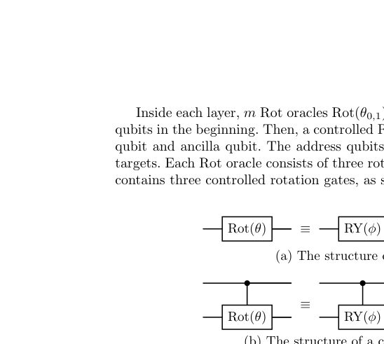
<figcaption class="paper-figure-caption"><b>Fig 1.</b> Fig. 7 Circuits of Rot and controlled-Rot oracles, ϕ, ω and ψ denote three angle parameters in each oracle</figcaption>
</figure>
<figure class="paper-figure-card">
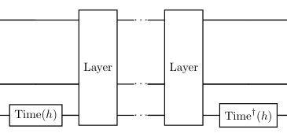
<figcaption class="paper-figure-caption"><b>Fig 2.</b> Fig. 8 The time-dependent QNN circuit in the phase kickback framework for the simulation of</figcaption>
</figure>
<figure class="paper-figure-card">
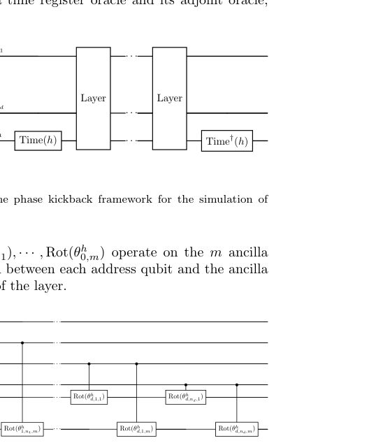
<figcaption class="paper-figure-caption"><b>Fig 3.</b> Fig. 9 The QNN layer circuit in the phase kickback framework for the implementation of e iβDVth</figcaption>
</figure>
<figure class="paper-figure-card">
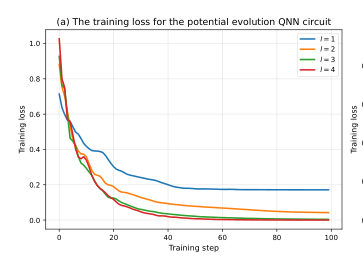
<figcaption class="paper-figure-caption"><b>Fig 4.</b> Fig. 11 The training losses for the potential and kinetic evolution QNN circuits with different numbers of layers l</figcaption>
</figure>
<figure class="paper-figure-card">
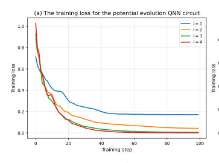
<figcaption class="paper-figure-caption"><b>Fig 5.</b> Figure 11. The final loss values for potential and kinetic evolution QNN circuits with different depths are shown in Table 1. Figure 11 shows that the training losses for both the QNN circuits for potential and kinetic evolution decrease as the training step increases, demonstrating the stable training process and the convergence behavior. For both QNN circuits, as the number of layers increases, the convergence of loss becomes faster, and the final training loss becomes lower. These results indicate that a deeper QNN circuit is able to improve the performance of approximating QROM in the phase kickback frameworks. In addition, as shown in Table 1, the final training losses of two QNN...</figcaption>
</figure>
</div>

<p><strong>Summary.</strong> This paper tackles the challenge of efficiently simulating flow models on quantum computers by leveraging the formal connection between flow dynamics and quantum wavefunction evolution. The authors propose replacing the resource-heavy Quantum Read-Only Memory (QROM) technique with a Quantum Neural Network (QNN) for data encoding. This results in a method that maintains high simulation accuracy while drastically reducing the required quantum circuit depth and gate count.</p>
<p><strong>Why it may be interesting.</strong> This work directly addresses the computational bottleneck of simulating continuous physical processes (like quantum evolution or fluid dynamics) on near-term quantum hardware by integrating advanced generative ML techniques (flow matching) with quantum circuit design.</p>
<details>
<summary>Detailed structure</summary>
<p><strong>Main problem.</strong> The paper aims to develop an efficient quantum circuit implementation for simulating flow models, which are used to model probability path transport.</p>
<p><strong>Main result.</strong> The authors successfully propose a method using a Quantum Neural Network (QNN) to replace the resource-intensive Quantum Read-Only Memory (QROM) framework, maintaining simulation accuracy while significantly reducing circuit resources.</p>
<p><strong>Method.</strong> The core method involves simulating wavefunction flow, which is connected to flow models via a continuity Hamiltonian, using a phase kickback framework enhanced by QNNs for data encoding.</p>
<p><strong>Model / system.</strong> The system involves flow models generating trajectories via an ODE solved by a velocity field, which is formally linked to quantum dynamics via the continuity Hamiltonian driving Schrödinger evolution.</p>
<p><strong>Key observables.</strong> Root Mean Square Error (RMSE), Wasserstein-1 distance, and KL divergence are used to compare the final simulated probability density against the target distribution.</p>
<p><strong>Important parameters / regimes.</strong> The efficiency is analyzed by comparing circuit resources (CNOT gates) between QROM-based and QNN-based implementations, and by varying temporal ($\Delta t$) and spatial ($\Delta x$) discretizations.</p>
<p><strong>Assumptions / limitations.</strong> The primary assumption is that replacing QROM with a trained QNN can maintain the accuracy of the wavefunction flow simulation while drastically reducing the exponential resource scaling associated with QROM.</p>
<p><strong>Figures summary.</strong> Figures compare the Root Mean Square Error (RMSE) of simulated vs. reference final probability densities across different time steps ($\Delta t$), and show particle visualizations demonstrating successful transport from an initial state to a target distribution using the learned potential.</p>
<p><strong>Paper structure.</strong> The paper first establishes the theoretical link between flow models and quantum dynamics via the continuity Hamiltonian. It then details the simulation using QROM-based phase kickback, identifies the resource bottleneck, and proposes the QNN replacement for QROM, concluding with numerical experiments validating the efficiency and accuracy of the QNN-based approach.</p>
</details>
<details>
<summary>Abstract</summary>
<p>Flow models generate trajectories from an initial distribution to a target distribution by solving an ordinary differential equation defined by a velocity field. Flow matching learns this velocity field by modeling the transport dynamics between the two distributions. Wavefunction flow establishes a formal connection between flow models and quantum dynamics by introducing a continuity Hamiltonian, which drives the Schrödinger evolution of quantum states. In this paper, we investigate accurate and efficient quantum simulation of the wavefunction flow, thereby realizing the efficient implementation of flow models on quantum computers. We first leverage a quantum read-only memory (QROM)-based phase kickback framework for the wavefunction flow simulation, generating probability densities that closely match those produced by the corresponding conventional flow model. To address the high circuit-resource cost, we further incorporate a trained quantum neural network (QNN) into the phase kickback framework, replacing QROM for data encoding. Numerical experiments demonstrate that our proposed method implements flow models on quantum computers more efficiently, since it maintains the accuracy of wavefunction flow simulation compared with the QROM-based framework, and significantly reduces the circuit resources.</p>
</details>
<p><sub><a href="#top">↑ back to top</a></sub></p>

<p><a id="paper-2610.11536"></a></p>
<h3 id="nonlinearity-management-of-matter-wave-vector-solitons-of-bose-einstein-condensates-in-two-dimensions"><a href="http://arxiv.org/abs/2610.11536v1">Nonlinearity management of matter-wave vector solitons of Bose-Einstein condensates in two dimensions</a></h3>
<p><strong>Authors:</strong> F. Kh. Abdullaev, J. S. Yuldashev, M. Ögren<br>
<strong>Type:</strong> theory · <strong>Category:</strong> quantum gases · <strong>PDF:</strong> <a href="https://arxiv.org/pdf/2610.11536v1">https://arxiv.org/pdf/2610.11536v1</a><br>
<strong>Analysis basis:</strong> full PDF text, analyzed in chunks
<strong>Topic relevance:</strong> <code>Keldysh / 2PI / non-Gaussian methods</code> <strong>2/5</strong> · <code>analog quantum simulation</code> <strong>2/5</strong> · <code>methods for driven-dissipative</code> <strong>1/5</strong></p>
<div class="figure-strip-hint">↔ Scroll figures horizontally</div>
<div class="paper-figures-scroll">
<figure class="paper-figure-card">
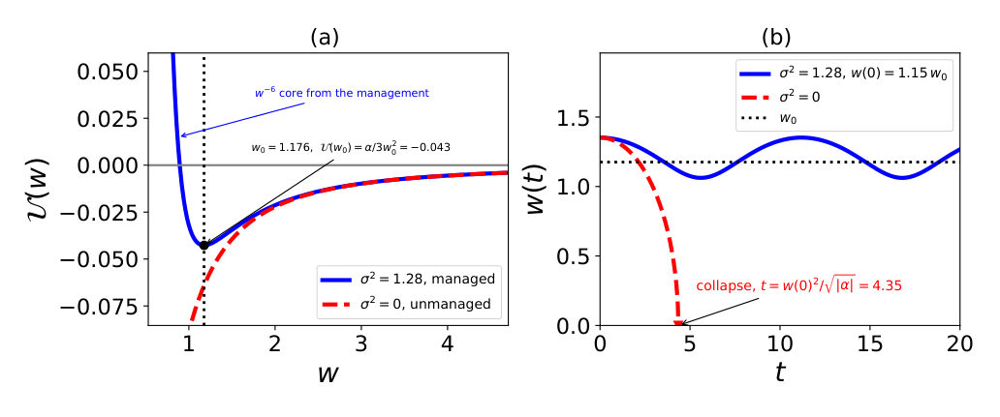
<figcaption class="paper-figure-caption"><b>Fig 1.</b> FIG. 1: (Color online) (a) Effective potential U(w), Eq. (35), for the parameters in Set B (table I). Without management (σ2 = 0, red dashed) the potential is attractive at all scales and the width reaches zero in a finite time; the nonlinear quantum pressure created by the modulation (blue solid) adds a repulsive w−6 core and produces a minimum at w0. (b) Width w(t) from the variational equation (34) for the same parameters and the initial condition w(0) = 1.15 w0, ˙w(0) = 0: collapse for σ2 = 0 (red dashed) and bounded oscillations with frequency Ω−for σ2 ̸= 0 (blue solid).</figcaption>
</figure>
<figure class="paper-figure-card">
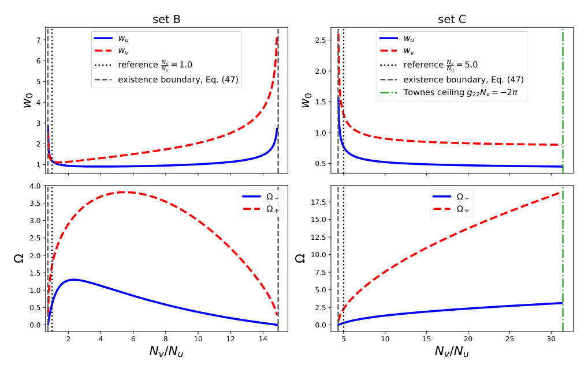
<figcaption class="paper-figure-caption"><b>Fig 2.</b> FIG. 2: (Color online) Asymmetric NM vector solitons, by Newton continuation of the fixed points of U(w1, w2) in Nv at fixed Nu. Left: set B (g11 = g22 = 1, γ0 = −2π, Nu = 1.4); right: set C (g11 = −4, g22 = −1/4, γ0 = −π, Nu = 0.8). (Upper two profile) stationary widths wu (blue) and wv (red dashed); (Lower two profile) the normal-mode frequencies, both real over the whole family. Grey dashed lines are the existence boundaries (47); the green dash-dotted line in the right column is the single-component Townes ceiling (48), which for set C is reached before the existence boundary and terminates the family while U still has a minimum. Dotted black: the reference imbalance used in Sec. IV.</figcaption>
</figure>
<figure class="paper-figure-card">
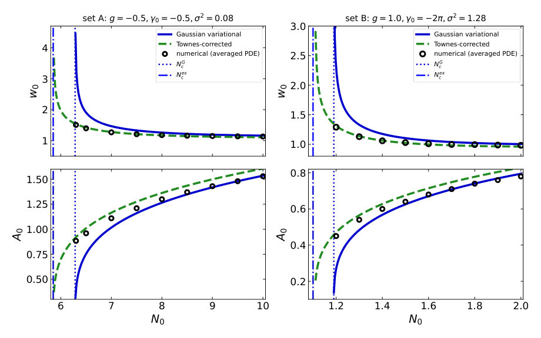
<figcaption class="paper-figure-caption"><b>Fig 3.</b> FIG. 3: (Color online) Width (top) and amplitude (bottom) of the stationary NM vector soliton versus the norm per component, for set A (left) and set B(right). Circles: DFPM states of the averaged system; solid: Gaussian variational prediction (36); dashed: Townes-corrected (41). Dotted and dashed-dotted vertical lines mark N G c and N ex c , respectively.</figcaption>
</figure>
<figure class="paper-figure-card">

<figcaption class="paper-figure-caption"><b>Fig 4.</b> Figure 4 shows the density |u|2 of the original model of Set B, initiated with the variationally found stationary state of the averaged system. In the first 4 frames the management is on; the wave packet keeps a localised core over many internal periods, breathing about the stationary width, and loses only the fraction of its norm that reaches the absorbing layer. In the last frame the same initial data are propagated with γ1 = 0, i.e. with the mean coupling γ0 alone: since N0 &gt; Nc the packet collapses, and the run has to be terminated. The two rows are plotted on the same colour scale up to the last frame, where the unmanaged density has grown by more than an order of magnitude. This is...</figcaption>
</figure>
<figure class="paper-figure-card">
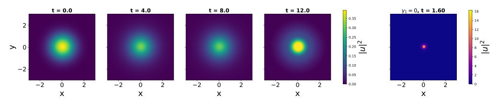
<figcaption class="paper-figure-caption"><b>Fig 5.</b> FIG. 4: (Color online) Density |u|2 of the full model (4) with the parameters in Set B, initialised with the variational stationary state of the averaged system. The first 4 frames show the managed evolution at the indicated times; the last frame shows the same initial data with the modulation switched off (γ1 = 0) shortly before the numerical solution has to be terminated.</figcaption>
</figure>
</div>

<p><strong>Summary.</strong> This paper analyzes how periodically modulating inter-species interactions can stabilize matter-wave vector solitons in two-dimensional Bose-Einstein condensates. By deriving an effective, averaged equation, the authors show that the resulting nonlinear quantum pressure counteracts the collapse tendency inherent in the system. Numerical simulations confirm that this management technique substantially prolongs the soliton's lifetime.</p>
<p><strong>Why it may be interesting.</strong> This work directly addresses the stability of matter-wave solitons in BECs, a core topic in AMO physics. The concept of 'nonlinearity management' provides a novel, controllable mechanism to stabilize quantum states against collapse, which has implications for realizing robust quantum matter-wave devices.</p>
<details>
<summary>Detailed structure</summary>
<p><strong>Main problem.</strong> The study investigates the nonlinear management of matter-wave vector solitons in two dimensions, specifically addressing the mechanism by which this management prevents collapse.</p>
<p><strong>Main result.</strong> The nonlinear quantum pressure arising from the averaging process arrests the collapse, leading to the existence of stable vector solitons whose lifetime is significantly prolonged compared to the unmanaged case.</p>
<p><strong>Method.</strong> The analysis employs averaging techniques over fast temporal modulations of the inter-species interaction, leading to an effective Hamiltonian, which is then analyzed using variational methods and numerical simulations.</p>
<p><strong>Model / system.</strong> The system models a two-component Bose-Einstein condensate (BEC) governed by coupled Gross-Pitaevskii equations. The dynamics are analyzed under periodic modulation of the inter-species interaction, leading to an effective, averaged nonlinear quantum pressure term.</p>
<p><strong>Key observables.</strong> Mean square radius ($ar{X}(t)$), soliton width ($w(t)$), and the effective energy functional ($ar{H}(L)$).</p>
<p><strong>Important parameters / regimes.</strong> Modulation strength ($\sigma^2$), coupling constants ($g_{ij}$), and the finite width ($L_{\min}$) where stable solitons exist.</p>
<p><strong>Assumptions / limitations.</strong> The analysis assumes the modulation is strong and rapid, allowing for the derivation of an averaged system via a near-identity transformation; the rigorous proof of collapse arrest is limited to this averaged model.</p>
<p><strong>Figures summary.</strong> Figures compare the time evolution of width and density profiles for managed vs. unmanaged systems, showing stable oscillations when management is active and collapse when it is switched off.</p>
<p><strong>Paper structure.</strong> The paper first derives the averaged system by averaging the time-dependent GPEs. It then uses variational analysis to map the dynamics to a mechanical system with an effective potential. Finally, it compares the predictions of the averaged model with full numerical simulations to confirm the stabilization effect.</p>
</details>
<details>
<summary>Abstract</summary>
<p>The evolution of matter-wave vector solitons in two dimensions under nonlinearity management is studied. The averaged over strong and rapid modulations in time of the inter-species interactions vector Gross-Pitaevskii equation is derived. The averaging gives the appearance of the effective nonlinear quantum pressure depending on the population of the other component. Using this system of equations, the dynamical stabilization of the two-dimensional vector matter-wave solitons under the management of the mean-field nonlinearity is investigated. It is shown that the nonlinear quantum pressure arrests the collapse in the averaged system, giving rise to stable vector solitons. Full numerical simulations of the original, time-dependent system of Gross-Pitaevskii equations confirm that the management strongly prolongs the lifetime of these solitons compared to the unmanaged case.</p>
</details>
<p><sub><a href="#top">↑ back to top</a></sub></p>

<p><a id="paper-2610.11713"></a></p>
<h3 id="electric-and-heat-transport-in-one-dimensional-sns-junctions-with-energy-dependent-transmission"><a href="http://arxiv.org/abs/2610.11713v1">Electric and Heat Transport in One-Dimensional SNS Junctions with Energy-Dependent Transmission</a></h3>
<p><strong>Authors:</strong> Kai Tsutsumi, Shun Uchino<br>
<strong>Type:</strong> theory · <strong>Category:</strong> quantum gases · <strong>PDF:</strong> <a href="https://arxiv.org/pdf/2610.11713v1">https://arxiv.org/pdf/2610.11713v1</a><br>
<strong>Analysis basis:</strong> full PDF text, analyzed in chunks
<strong>Topic relevance:</strong> <code>Keldysh / 2PI / non-Gaussian methods</code> <strong>2/5</strong> · <code>methods for driven-dissipative</code> <strong>2/5</strong></p>
<div class="figure-strip-hint">↔ Scroll figures horizontally</div>
<div class="paper-figures-scroll">
<figure class="paper-figure-card">
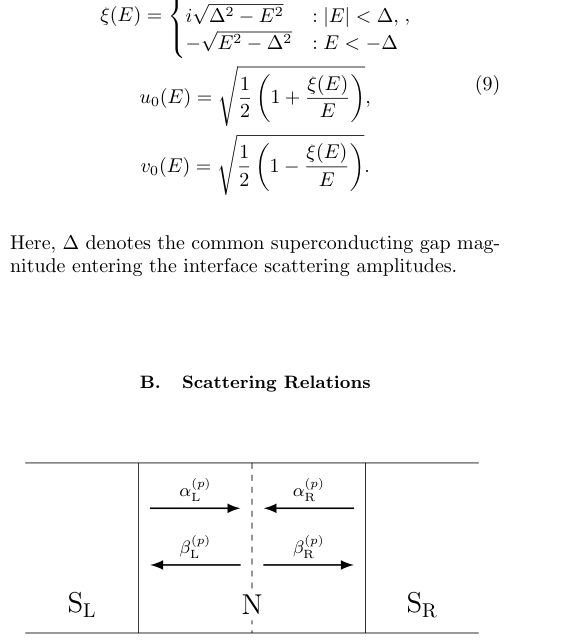
<figcaption class="paper-figure-caption"><b>Fig 1.</b> FIG. 2. The scattering amplitudes in the normal region. The amplitudes α(p) j and β(p) j describe modes propagating toward and away from the normal-region scatterer, respectively. The arrows indicate the propagation directions.</figcaption>
</figure>
<figure class="paper-figure-card">
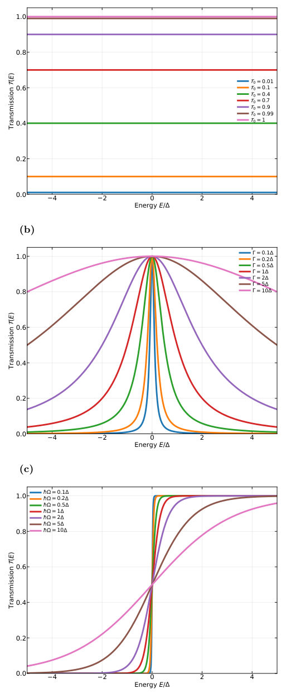
<figcaption class="paper-figure-caption"><b>Fig 2.</b> FIG. 3. The normal-region transmission probability as a func- tion of energy: (a) energy-independent, (b) quantum-dot- type, and (c) QPC profiles. The legends give the values of T0, Γ, and ℏΩ, respectively.</figcaption>
</figure>
<figure class="paper-figure-card">
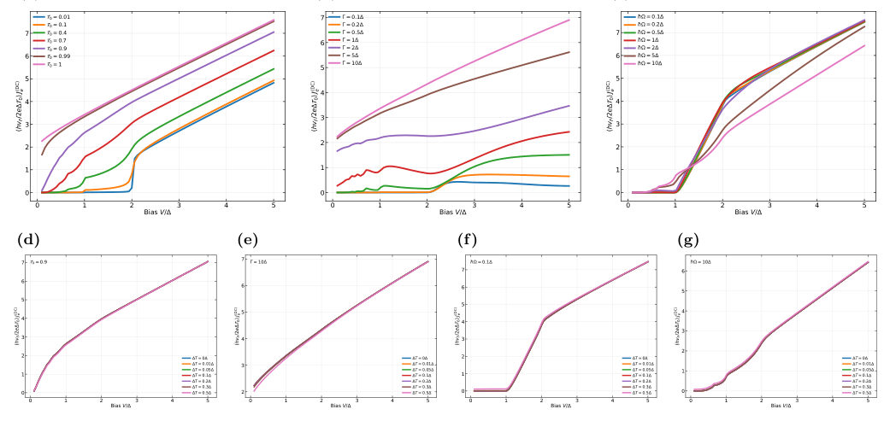
<figcaption class="paper-figure-caption"><b>Fig 3.</b> FIG. 4. Bias dependence of the dc electric current. Panels (a)-(c) use the energy-independent Tconst, the quantum-dot-type TQdot, and the QPC-type TQPC profiles, respectively, at ∆T = 0. Panels (d)-(g) compare several temperature differences for (d) the energy-independent profile with T0 = 0.9, (e) the quantum-dot-type profile with Γ = 10∆, (f) the QPC profile with ℏΩ= 0.1∆and (g) ℏΩ= 10∆. Panel (a) reproduces the result of Averin and Bardas [5], and panel (b) the resonant-level result of Levy Yeyati et al. [17]. The legends give the parameter value.</figcaption>
</figure>
<figure class="paper-figure-card">
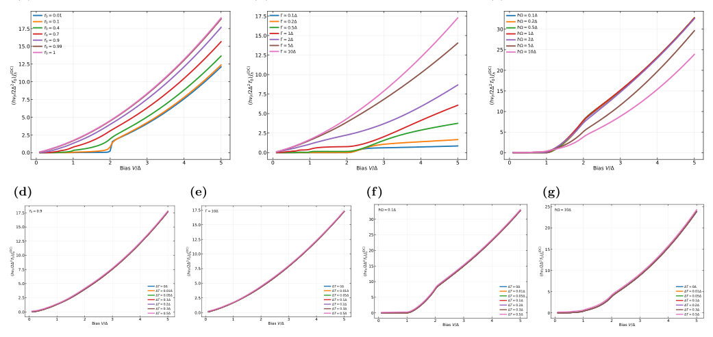
<figcaption class="paper-figure-caption"><b>Fig 4.</b> FIG. 5. Bias dependence of the dc heat current. Panels (a)-(c) use the energy-independent Tconst, (b) the quantum-dot-type TQdot, and (c) the QPC TQPC profiles, respectively at ∆T = 0. Panels (d)-(g) compare several temperature differences for (d) the energy-independent profile with T0 = 0.9, (e) the quantum-dot-type profile with Γ = 10∆, (f) the QPC profile with ℏΩ= 0.1∆and (g) ℏΩ= 10∆. The legends give the parameter values.</figcaption>
</figure>
<figure class="paper-figure-card">
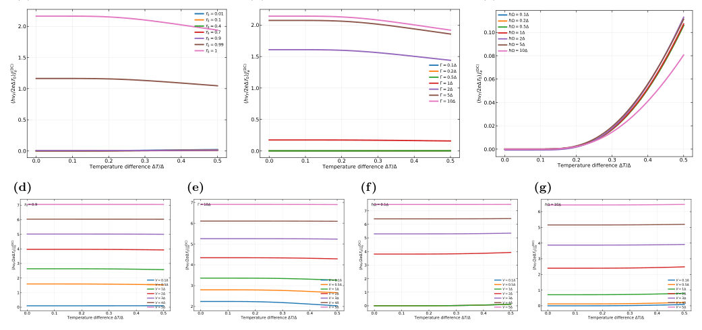
<figcaption class="paper-figure-caption"><b>Fig 5.</b> FIG. 6. Temperature-difference dependence of the dc electric current. Panels (a)-(c) use the energy-independent Tconst, (b) the quantum-dot-type TQdot, and (c) the QPC TQPC profiles, respectively, at V = 0.05∆. Panels (d)-(g) compare several biases for (d) the energy-independent profile with T0 = 0.9, (e) the quantum-dot-type profile with Γ = 10∆, (f) the QPC profile with ℏΩ= 0.1∆and (g) ℏΩ= 10∆. The legends give the parameter values.</figcaption>
</figure>
</div>

<p><strong>Summary.</strong> This theoretical work analyzes the nonlinear transport of both electric and heat currents in 1D SNS junctions using a scattering approach. By comparing different models for energy-dependent transmission, the authors demonstrate that the junction's response to temperature gradients is critically dependent on the microscopic details of the normal metal region. This provides a crucial microscopic reference for understanding energy transport in mesoscopic fermionic superfluid junctions.</p>
<p><strong>Why it may be interesting.</strong> The detailed study of non-equilibrium transport in superconducting mesoscopic junctions provides a rich theoretical framework for understanding energy and charge flow in quantum systems, relevant to superconducting quantum devices.</p>
<details>
<summary>Detailed structure</summary>
<p><strong>Main problem.</strong> The study investigates the phase-independent DC components of electric and heat currents flowing through one-dimensional Superconductor-Normal-Metal-Superconductor (SNS) junctions.</p>
<p><strong>Main result.</strong> The nonlinear response of both electric and heat currents to temperature differences is highly dependent on the specific transmission profile (e.g., QPC vs. quantum-dot type) used in the normal region.</p>
<p><strong>Method.</strong> The authors employ a scattering approach derived from the Bogoliubov-de Gennes equations, incorporating Multiple Andreev Reflections (MARs) while retaining energy-dependent transmission.</p>
<p><strong>Model / system.</strong> The system is a 1D SNS junction connecting two superconducting reservoirs via a normal metal. The analysis compares three transmission profiles: energy-independent, Lorentzian (quantum-dot), and QPC-like.</p>
<p><strong>Key observables.</strong> Electric current ($J_{ele}^{DC}$) and Heat current ($J_{heat}^{DC}$)</p>
<p><strong>Important parameters / regimes.</strong> Bias voltage ($V$), temperature difference ($\Delta T$), and the specific transmission profile $T(E)$.</p>
<p><strong>Assumptions / limitations.</strong> The analysis focuses on the phase-independent DC components ($\phi=0$) and utilizes the Andreev approximation, although limitations regarding unitarity near this limit are noted.</p>
<p><strong>Figures summary.</strong> Figures are mentioned to illustrate scattering amplitudes in the normal region and the bias dependence of the currents for the different transmission profiles.</p>
<p><strong>Paper structure.</strong> The paper builds from defining the physical system and the scattering formalism (Bogoliubov-de Gennes equations) to deriving the current expressions via field-operator expansion and solving recurrence relations for scattering amplitudes.</p>
</details>
<details>
<summary>Abstract</summary>
<p>We investigate the phase-independent dc components of the electric and heat currents through a one-dimensional superconductor-normal-metal-superconductor (SNS) junction subject to chemical-potential and temperature differences between two superconducting reservoirs. Using a scattering approach based on the Bogoliubov-de Gennes equations, we incorporate multiple Andreev reflections while retaining the energy dependence of transmission through the normal region. We compare energy-independent, quantum-dot-type, and quantum-point-contact transmission profiles. At low bias, both currents exhibit nonlinear features associated with the superconducting gap and multiple Andreev reflections. Their responses to a temperature difference depend remarkably on the transmission profile. At a small finite bias, the electric current depends weakly on the temperature difference for the energy-independent and quantum-dot-type profiles, whereas the quantum-point-contact profile produces a pronounced nonlinear response. The heat current depends nonlinearly on the temperature difference for all three profiles over the parameter range investigated. These results highlight the role of the transmission profile in nonlinear electric and heat transport through SNS junctions and provide a microscopic reference for related transport studies in mesoscopic fermionic superfluid junctions.</p>
</details>
<p><sub><a href="#top">↑ back to top</a></sub></p>

<p><a id="paper-2610.11257"></a></p>
<h3 id="residual-spectral-instabilities-in-representation-learning"><a href="http://arxiv.org/abs/2610.11257v1">Residual spectral instabilities in representation learning</a></h3>
<p><strong>Authors:</strong> Zhen Li<br>
<strong>Type:</strong> theory · <strong>Category:</strong> statistical mechanics · <strong>PDF:</strong> <a href="https://arxiv.org/pdf/2610.11257v1">https://arxiv.org/pdf/2610.11257v1</a><br>
<strong>Analysis basis:</strong> full PDF text, analyzed in chunks
<strong>Topic relevance:</strong> <code>Keldysh / 2PI / non-Gaussian methods</code> <strong>2/5</strong> · <code>driven-dissipative phase transition</code> <strong>1/5</strong> · <code>non-equilibrium universality</code> <strong>1/5</strong></p>
<div class="figure-strip-hint">↔ Scroll figures horizontally</div>
<div class="paper-figures-scroll">
<figure class="paper-figure-card">
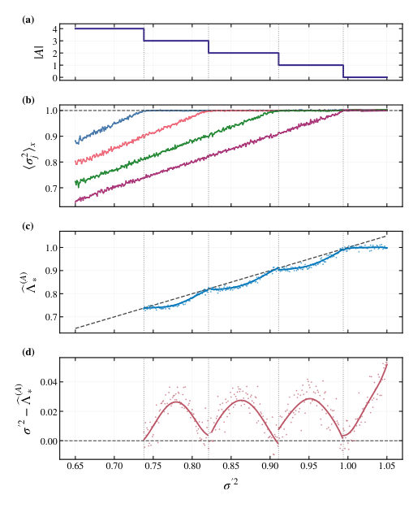
<figcaption class="paper-figure-caption"><b>Fig 1.</b> FIG. 1. Spectral cascade of dimension-wise posterior col- lapse. (a) Number of active latent dimensions |A| and (b) mean posterior variances σ2 j</figcaption>
</figure>
</div>

<p><strong>Summary.</strong> This work analyzes the stability of learned representations in VAEs by treating the ELBO as an effective free energy. It develops a theory showing that latent dimension collapse occurs in a predictable 'spectral cascade' governed by the residual spectrum. This provides a rigorous, physics-based understanding of information loss in deep generative models.</p>
<p><strong>Why it may be interesting.</strong> The connection between information geometry (VAE collapse) and spectral stability criteria mirrors concepts in non-equilibrium statistical mechanics, particularly phase transitions or stability boundaries in complex systems.</p>
<details>
<summary>Detailed structure</summary>
<p><strong>Main problem.</strong> The paper investigates the physical principles governing how learned representations, modeled by Variational Autoencoders (VAEs), lose latent degrees of freedom through successive collapse.</p>
<p><strong>Main result.</strong> It derives a spectral cascade interpretation where the loss of latent dimensions occurs sequentially at points of spectral marginality, governed by the residual spectrum.</p>
<p><strong>Method.</strong> The analysis formulates dimension-wise posterior collapse as a fluctuation theory around partially collapsed states, treating the negative Evidence Lower Bound (ELBO) as an effective free energy functional.</p>
<p><strong>Model / system.</strong> The model is a Variational Autoencoder (VAE) analyzed using statistical physics techniques. The latent space fluctuations are treated via a Gaussian theory derived from the quadratic expansion of the ELBO, leading to a Hessian matrix acting as a mass matrix.</p>
<p><strong>Key observables.</strong> Residual spectrum ($\Lambda(A)^*$), local reactivation direction, and the stability criterion ($\sigma'^2 \geq \Lambda(A)^*$).</p>
<p><strong>Important parameters / regimes.</strong> Decoder variance ($\sigma'^2$), the residual spectral upper edge ($\hat{\Lambda}(A)^*$), and the number of active latent dimensions ($|A|$).</p>
<p><strong>Assumptions / limitations.</strong> The analysis relies on expanding the free energy around a stationary state and assuming a Gaussian theory for fluctuations.</p>
<p><strong>Figures summary.</strong> Figures illustrate the spectral cascade showing a staircase pattern of dimension loss as the decoder variance ($\sigma'^2$) is varied, alongside the comparison between the stability margin and the residual spectral upper edge.</p>
<p><strong>Paper structure.</strong> The paper progresses by formulating the collapse as a fluctuation theory, deriving the residual spectrum using a conditional residual operator, establishing the stability criterion, and finally demonstrating the spectral cascade interpretation through numerical continuation experiments.</p>
</details>
<details>
<summary>Abstract</summary>
<p>Learned representations can lose latent degrees of freedom successively, suggesting a cascade of transitions whose underlying stability principle remains unclear. Here we formulate dimension-wise posterior collapse in variational autoencoder (VAE) as a fluctuation theory around partially collapsed states. Interpreting the negative evidence lower bound as an effective free energy, its quadratic expansion defines a Gaussian theory whose Hessian acts as a mass matrix for latent fluctuations. We show that the collapsed directions form an invariant fluctuation sector and derive its exact mass spectrum in terms of a conditional residual operator. A local reactivation direction lowers the free energy when the decoder variance falls below the residual spectral upper edge, with equality marking marginality. The criterion recovers principal component thresholds in the linear Gaussian VAE limit. Viewed in reverse along continuously connected branches, the reactivation boundary provides a local criterion for successive collapse. Numerical continuation experiments show successive loss of latent dimensions near these spectral marginalities. These results support a spectral cascade interpretation governed by residual information left unexplained by the surviving representation.</p>
</details>
<p><sub><a href="#top">↑ back to top</a></sub></p>

<p><a id="paper-2610.12112"></a></p>
<h3 id="the-imaginary-component-of-the-weak-momentum-spectral-vanishing-and-gauge-invariance"><a href="http://arxiv.org/abs/2610.12112v1">The Imaginary Component of the Weak Momentum: Spectral Vanishing and Gauge Invariance</a></h3>
<p><strong>Authors:</strong> A. N. Khondker<br>
<strong>Type:</strong> theory · <strong>Category:</strong> other · <strong>PDF:</strong> <a href="https://arxiv.org/pdf/2610.12112v1">https://arxiv.org/pdf/2610.12112v1</a><br>
<strong>Analysis basis:</strong> full PDF text, analyzed in chunks
<strong>Topic relevance:</strong> <code>quantum measurements</code> <strong>2/5</strong> · <code>Keldysh / 2PI / non-Gaussian methods</code> <strong>1/5</strong> · <code>analog quantum simulation</code> <strong>1/5</strong></p>
<div class="figure-strip-hint">↔ Scroll figures horizontally</div>
<div class="paper-figures-scroll">
<figure class="paper-figure-card">
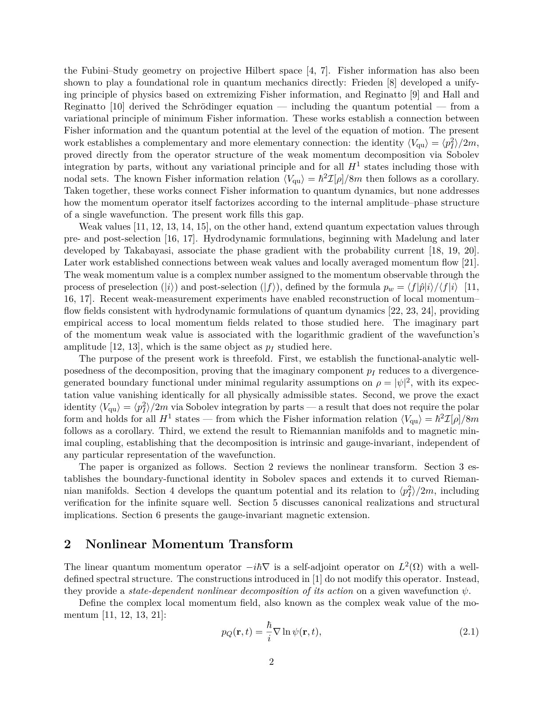
<figcaption class="paper-figure-caption"><b>Fig 1.</b> Low-resolution page preview, page 2</figcaption>
</figure>
<figure class="paper-figure-card">
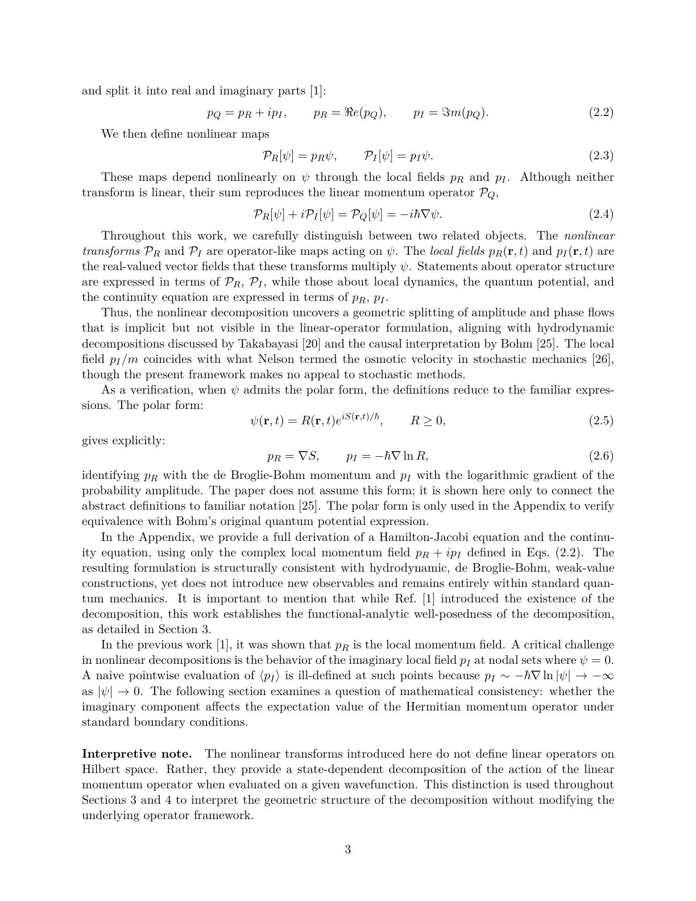
<figcaption class="paper-figure-caption"><b>Fig 2.</b> Low-resolution page preview, page 3</figcaption>
</figure>
<figure class="paper-figure-card">
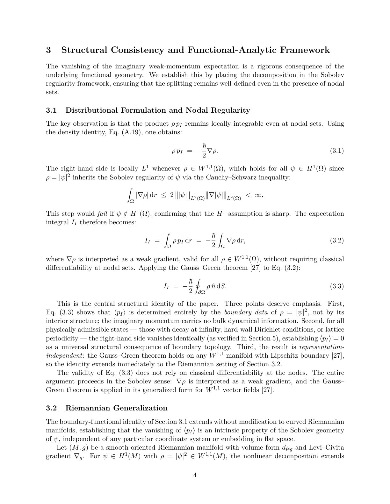
<figcaption class="paper-figure-caption"><b>Fig 3.</b> Low-resolution page preview, page 4</figcaption>
</figure>
<figure class="paper-figure-card">
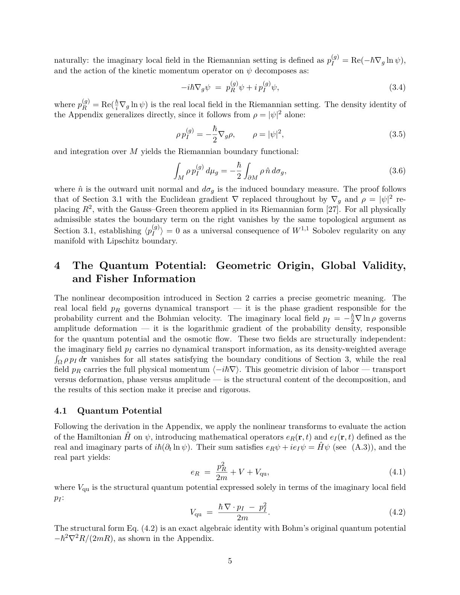
<figcaption class="paper-figure-caption"><b>Fig 4.</b> Low-resolution page preview, page 5</figcaption>
</figure>
<figure class="paper-figure-card">
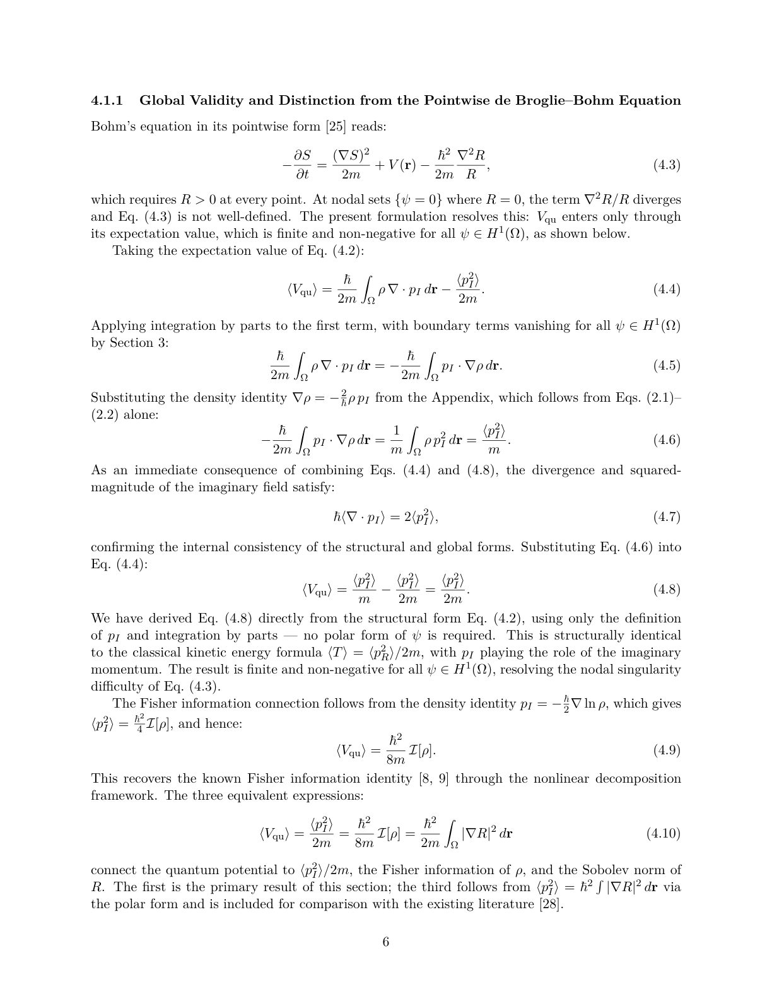
<figcaption class="paper-figure-caption"><b>Fig 5.</b> Low-resolution page preview, page 6</figcaption>
</figure>
</div>

<p><strong>Summary.</strong> This paper develops a rigorous mathematical framework by decomposing the quantum momentum into real and imaginary components. It proves that the expectation value of the imaginary momentum vanishes, while showing that the entire quantum potential is structurally determined by the imaginary component. This provides a gauge-invariant, geometric understanding of quantum dynamics applicable to various physical settings.</p>
<p><strong>Why it may be interesting.</strong> The rigorous mathematical treatment of the momentum decomposition and the derivation of the quantum potential from $\mathbf{p}_I$ offers a novel, geometrically grounded perspective on non-linear quantum dynamics, which is relevant for understanding complex many-body systems.</p>
<details>
<summary>Detailed structure</summary>
<p><strong>Main problem.</strong> The paper establishes a rigorous functional-analytic framework to decompose the quantum momentum operator into real ($\mathbf{p}_R$) and imaginary ($\mathbf{p}_I$) components and analyze the physical consequences of this decomposition.</p>
<p><strong>Main result.</strong> The expectation value of the imaginary momentum component ($\langle \mathbf{p}_I 
angle$) vanishes identically for physically admissible states, and the Bohm quantum potential arises entirely from $\mathbf{p}_I$, leading to connections with Fisher information.</p>
<p><strong>Method.</strong> The analysis employs Sobolev spaces and functional-analytic techniques, utilizing the Gauss–Green theorem to evaluate expectation values and derive density identities.</p>
<p><strong>Model / system.</strong> The study concerns quantum mechanics for a wavefunction $\psi$ in a domain $\Omega$, extending to curved Riemannian manifolds and incorporating magnetic minimal coupling.</p>
<p><strong>Key observables.</strong> Complex weak momentum ($\mathbf{p}_Q$), imaginary momentum ($\mathbf{p}_I$), Bohm quantum potential ($\langle V_{qu} 
angle$), and Fisher information ($I[
ho]$).</p>
<p><strong>Important parameters / regimes.</strong> The analysis is valid for $\psi \in H^1(\Omega)$, and results are shown to be gauge-invariant under magnetic minimal coupling.</p>
<p><strong>Assumptions / limitations.</strong> The derivation relies on the boundary conditions (e.g., decay at infinity) to prove the vanishing of $\langle \mathbf{p}_I 
angle$.</p>
<p><strong>Paper structure.</strong> The paper proceeds by defining the complex momentum decomposition, proving the vanishing of $\langle \mathbf{p}_I 
angle$ using boundary integrals, and then deriving structural identities linking $\langle V_{qu} 
angle$ to $\langle \mathbf{p}_I^2 
angle$ and the Fisher information.</p>
</details>
<details>
<summary>Abstract</summary>
<p>We establish a rigorous functional-analytic framework for the imaginary component $p_I$ of the complex weak momentum $p_Q = p_R + ip_I = \frac{\hbar}{i}\nabla\lnψ$. For every wavefunction in the Sobolev space $H^1(Ω)$, including those with nodal sets, we prove that the expectation value of $p_I$ vanishes identically, as a consequence of the regularity of $ρ= |ψ|^2$ and without appeal to the polar form $ψ= Re^{iS/\hbar}$. We further show that \textnormal{(i)} the Bohm quantum potential arises entirely from $p_I$ and satisfies $\langle V_{\mathrm{qu}}\rangle = \langle p_I^2\rangle/2m$, from which the known Fisher information relation follows as a corollary; \textnormal{(ii)} the group velocity of a Bloch band is the density-weighted average of $p_R/m$, with no contribution from $p_I$; \textnormal{(iii)} the decomposition is gauge-invariant under magnetic minimal coupling, the vector potential acting only on $p_R$; and \textnormal{(iv)} the results extend to curved Riemannian manifolds.</p>
</details>
<p><sub><a href="#top">↑ back to top</a></sub></p>

<p><a id="paper-2610.10710"></a></p>
<h3 id="cooper-instability-of-a-magnetic-wigner-crystal"><a href="http://arxiv.org/abs/2610.10710v1">Cooper Instability of a Magnetic Wigner Crystal</a></h3>
<p><strong>Authors:</strong> Wangqian Miao, Chunli Huang<br>
<strong>Type:</strong> theory · <strong>Category:</strong> strongly correlated electrons · <strong>PDF:</strong> <a href="https://arxiv.org/pdf/2610.10710v1">https://arxiv.org/pdf/2610.10710v1</a><br>
<strong>Analysis basis:</strong> full PDF text, analyzed in chunks
<strong>Topic relevance:</strong> <code>Keldysh / 2PI / non-Gaussian methods</code> <strong>2/5</strong> · <code>analog quantum simulation</code> <strong>1/5</strong></p>
<div class="figure-strip-hint">↔ Scroll figures horizontally</div>
<div class="paper-figures-scroll">
<figure class="paper-figure-card">
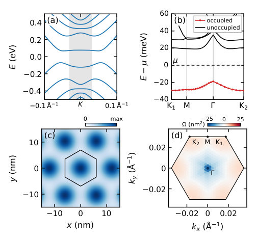
<figcaption class="paper-figure-caption"><b>Fig 1.</b> Figure 1. (a) Single-particle bands of R5G near the K valley at displacement-field potential U = 50 meV. The shaded window marks the momenta |δk| ≤kF occupied at the density n in a single flavor. (b) HF bands of the polarized flavor with the occupied band in red and the chemical potential µ set at midgap. (c) Charge density of the Wigner crystal; the hexagon marks the Wigner–Seitz cell. (d) Berry curvature Ω(k) of the occupied band; its integral vanishes, C = 0.</figcaption>
</figure>
<figure class="paper-figure-card">
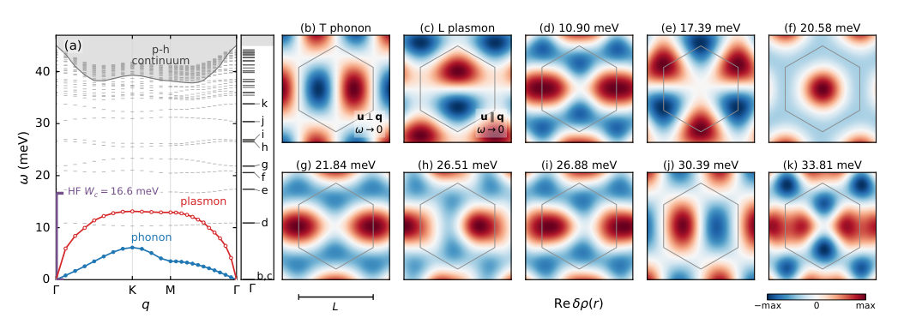
<figcaption class="paper-figure-caption"><b>Fig 2.</b> Figure 2. Particle-hole excitation spectrum of the magnetic Wigner crystal. Transverse phonon (blue), longitudinal plasmon (red), and uncorrelated HF particle–hole continuum (shaded). The adjacent strip resolves collective modes at Γ; Wc = 16.6 meV is the first conduction- band width. (b,c) Transverse and longitudinal modes δρ = u · ∇ρ with ρ shown in Fig. 1c. (d–k) Other collective modes at Γ. Colors show Re δρ(r), normalized separately for each mode. Hexagons outline the Wigner–Seitz cell. L is the lattice constant.</figcaption>
</figure>
<figure class="paper-figure-card">

<figcaption class="paper-figure-caption"><b>Fig 3.</b> Figure 3. Spectral density of the magnetic Wigner crystal for den- sity response −Im χρρ, longitudinal-current response −Im χJ∥J∥, and transverse-current response −Im χJ⊥J⊥. The collective modes above plasmon and transverse phonon take up a lot of spectral weight. Each map uses Lorentzian broadening of 0.065 meV, is normalized to its own maximum, and is shown on a logarithmic scale over three decades.</figcaption>
</figure>
<figure class="paper-figure-card">

<figcaption class="paper-figure-caption"><b>Fig 4.</b> Figure 4. Cooper pair in magnetic wigner crystal. (a),(b) Lowest pair energy Epair P (red dots), other bound states (gray dots), and the two-particle continuum (shaded), for attraction only and attraction plus residual Coulomb interaction, respectively. The binding energy at P = 0 is indicated. (c),(d) Attraction-only ground state at P = 0. (c) Pair density P</figcaption>
</figure>
<figure class="paper-figure-card">

<figcaption class="paper-figure-caption"><b>Fig 5.</b> Fig. 4(b), Coulomb repulsion substantially weakens the binding, reducing Eb(0) to 4.46 meV. Nevertheless, the lowest pair branch remains below the continuum along the plotted path, with its minimum at P = 0. Table I compares the contributions of different collective modes to pairing. The two translational modes, the transverse phonon and longitudinal plasmon, provide most of the binding. The internal modes give only a modest enhancement. By νcut = 39, the retained modes extend into the particle–hole continuum. Despite their large number, these additional modes contribute little because they couple weakly to the conduction-band electrons.</figcaption>
</figure>
</div>

<p><strong>Summary.</strong> This theoretical work explores superconductivity in a magnetic Wigner crystal realized in graphene. By modeling the electron-phonon interaction, the authors demonstrate that the crystal's own vibrations can induce a pairing attraction strong enough to cause superconductivity. The resulting superconducting state is predicted to exhibit chiral p-wave pairing, providing a theoretical pathway for understanding electronic crystallization and pairing in correlated 2D materials.</p>
<p><strong>Why it may be interesting.</strong> While focused on solid-state physics, the methodology of using collective excitations (bosons) to mediate pairing in a strongly correlated, non-equilibrium system shares conceptual links with how bosonic mediators are treated in some AMO contexts, though the physical system is distinct.</p>
<details>
<summary>Detailed structure</summary>
<p><strong>Main problem.</strong> The study investigates whether collective vibrational modes (phonons) within a magnetic Wigner crystal can mediate an attractive interaction strong enough to induce electron pairing (Cooper instability).</p>
<p><strong>Main result.</strong> The calculations show that the phonon-mediated attraction exceeds the pairing threshold, leading to the prediction of chiral p-wave pairing as the leading superconducting instability.</p>
<p><strong>Method.</strong> The authors employed a combination of Hartree-Fock and time-dependent Hartree-Fock approximations to derive an effective fermion-boson Hamiltonian, which was then solved using the quasiboson approximation for the two-electron Cooper problem.</p>
<p><strong>Model / system.</strong> The system is a magnetic Wigner crystal formed by electrons in the first conduction band of rhombohedral hexalayer graphene. The model treats the interaction via coupling to the crystal's collective bosonic excitations (phonons and plasmons).</p>
<p><strong>Key observables.</strong> Pairing susceptibility, binding energy ($E_b$), and the momentum-space phase texture ($\chi_0(k)$) which exhibits a winding consistent with chiral p-wave pairing.</p>
<p><strong>Important parameters / regimes.</strong> Electron density ($n = 0.8 	imes 10^{12} 	ext{ cm}^{-2}$); the comparison between the phonon-mediated attraction and the finite pairing threshold.</p>
<p><strong>Assumptions / limitations.</strong> The analysis is restricted to the two-electron Cooper problem and relies on approximations such as the quasiboson approximation and neglecting retardation effects.</p>
<p><strong>Figures summary.</strong> Figures illustrate the single-particle bands, the particle-hole excitation spectrum showing collective modes (phonon, plasmon), and the real-space pair density, confirming the chiral p-wave nature.</p>
<p><strong>Paper structure.</strong> The paper builds from initial observations in graphene to constructing an effective fermion-boson Hamiltonian, solving the two-electron problem using approximations, and finally determining the superconducting pairing symmetry.</p>
</details>
<details>
<summary>Abstract</summary>
<p>Recent scanning tunneling microscopy has directly imaged electronic crystals in rhombohedral hexalayer graphene, and magnetotransport measurements suggest that superconductivity and charge-density-wave order emerge from a common spin-valley-polarized ferromagnetic metal at nearby carrier densities. Motivated by these observations, we ask whether collective modes in a magnetic Wigner crystal can mediate pairing in this setting. We address this question by studying the Cooper problem for two electrons in the first conduction band of the Wigner crystal. Unlike conventional phonon-mediated pairing, the collective mode (boson) energies and single-particle (fermion) dispersion are comparable scales controlled by the electron density, leaving no small parameter for an adiabatic expansion. Moreover, because the magnetic Wigner crystal is not time-reversal invariant, the usual Cooper logarithmic divergence in the pairing susceptibility is absent, so the attraction must exceed a finite threshold for pairing to occur. These unusual features motivate a numerical experiment to see whether the crystal's own vibrations can bind electrons. We obtain the crystalline ground state and its collective mode spectrum within Hartree--Fock and time-dependent Hartree--Fock approximation, and derive the electron--phonon Hamiltonian using the quasiboson approximation. Solving the resulting two-electron problem, we find that phonon-mediated attraction exceeds the pairing threshold, with chiral $p$-wave pairing as the leading instability. Within these approximations, we show that collective modes of a Wigner crystal can indeed favor chiral pairing despite broken time-reversal symmetry. Our results provide an encouraging starting point for developing a full many-body theory to study electronic crystallization and superconductivity.</p>
</details>
<p><sub><a href="#top">↑ back to top</a></sub></p>

<p><a id="paper-2610.11068"></a></p>
<h3 id="high-resolution-mapping-of-the-phase-boundary-of-the-honeycomb-lattice-blume-capel-ferromagnet"><a href="http://arxiv.org/abs/2610.11068v1">High-resolution mapping of the phase boundary of the honeycomb-lattice Blume--Capel ferromagnet</a></h3>
<p><strong>Authors:</strong> Eluiz C. M. Filho, Claudio J. DaSilva<br>
<strong>Type:</strong> theory · <strong>Category:</strong> statistical mechanics · <strong>PDF:</strong> <a href="https://arxiv.org/pdf/2610.11068v1">https://arxiv.org/pdf/2610.11068v1</a><br>
<strong>Analysis basis:</strong> full PDF text, analyzed in chunks
<strong>Topic relevance:</strong> <code>methods for driven-dissipative</code> <strong>2/5</strong> · <code>analog quantum simulation</code> <strong>1/5</strong></p>
<div class="figure-strip-hint">↔ Scroll figures horizontally</div>
<div class="paper-figures-scroll">
<figure class="paper-figure-card">

<figcaption class="paper-figure-caption"><b>Fig 1.</b> FIG. 1. (a) Cumulant U L Q along ∆∗ L(T). (b) Extrapolation of the crossing temperatures. (c) L−2 extrapolation of ∆∗ L at T = Tt.</figcaption>
</figure>
<figure class="paper-figure-card">

<figcaption class="paper-figure-caption"><b>Fig 2.</b> Figure 2 summarizes both the evolution of the mixed- order-parameter distribution and the finite-size behavior used to identify the two regimes. Panel (a) shows PL( ˜Q) for L = 24 at representative points along the transi- tion line, illustrating how the distribution evolves on ap- proaching and crossing the tricritical region. Panel (b) displays the size dependence at T = 0.360, where the two peaks sharpen monotonically with increasing L (heights 2.05, 2.47, 2.63, and 3.19 for L = 12, 16, 18, 24), as ex- pected for a first-order transition. Panel (c) shows the corresponding L−2 extrapolation of ∆∗ L at this tempera- ture, providing a representative example of the finite-size scaling used...</figcaption>
</figure>
<figure class="paper-figure-card">

<figcaption class="paper-figure-caption"><b>Fig 3.</b> FIG. 2. (a) PL( ˜Q) for L = 24 along the transition line. (b) Size dependence at T = 0.360, in the first-order regime: the peaks sharpen with L. (c) L−2 extrapolation of ∆∗ L at T = 0.360. (d) Size dependence at T = 0.415, above the tricritical point: the peaks flatten with L.</figcaption>
</figure>
<figure class="paper-figure-card">

<figcaption class="paper-figure-caption"><b>Fig 4.</b> FIG. 3. Finite-size scaling tests of the expected tricritical eigenvalue exponents. (a) Collapse of PL(Q) with yt = 9/5. (b) Collapse of U L Q with yg = 4/5.</figcaption>
</figure>
<figure class="paper-figure-card">

<figcaption class="paper-figure-caption"><b>Fig 5.</b> FIG. 4. Multicanonical results. (a) Size dependence of the interface tension, Eq. (21), with fits to Eq. (22); open symbols are the extrapolated Σ∞. (b) Σ∞against the distance g = Tt −T from the tricritical point, on logarithmic axes. The solid line is the fit with µ = 5/4 and a leading correction; the dashed line shows the slope 5/9 for comparison. (c) Coexistence line ∆∗ ∞(T): cubic fit (solid), low-temperature expansion of Eq. (27) (dashed), slope at the tricritical point implied by the field-mixing value of r through Eq. (25) (grey), and tricritical point from the cumulant analysis (star). Colors and symbols identify the temperature in all panels.</figcaption>
</figure>
</div>

<p><strong>Summary.</strong> This paper provides a high-resolution numerical mapping of the phase boundary for the spin-1 Blume-Capel ferromagnet on the honeycomb lattice. Using advanced simulation techniques, it precisely locates the tricritical point and determines critical exponents. The work demonstrates strong internal consistency across multiple simulation methods, providing a detailed understanding of the system's phase transitions.</p>
<p><strong>Why it may be interesting.</strong> While focused on classical statistical mechanics, the use of advanced simulation techniques like multicanonical sampling and density of states estimation is highly relevant to simulating complex quantum many-body systems where phase boundaries are critical.</p>
<details>
<summary>Detailed structure</summary>
<p><strong>Main problem.</strong> The study aims to map the phase boundary and precisely locate the tricritical point of the spin-1 Blume-Capel ferromagnet on the honeycomb lattice.</p>
<p><strong>Main result.</strong> The tricritical point is located at $(\Delta_t, T_t) = [1.4819(2), 0.4022(7)]$, and the analysis yields consistent estimates for critical exponents and scaling parameters.</p>
<p><strong>Method.</strong> The research employs advanced numerical simulation techniques including Wang-Landau estimation of the joint density of states, histogram reweighting, and multicanonical simulations to analyze phase transitions.</p>
<p><strong>Model / system.</strong> The system is the spin-1 Blume-Capel ferromagnet defined on a honeycomb lattice, described by a Hamiltonian involving nearest-neighbor interactions and a quadratic term ($\sigma_i^2$).</p>
<p><strong>Key observables.</strong> Joint density of states $\Omega(E_1, E_2)$, tricritical point coordinates $(\Delta_t, T_t)$, interface-tension exponent $\mu$, and critical exponents $y_t$ and $y_g$.</p>
<p><strong>Important parameters / regimes.</strong> The coordination number $z=3$ (honeycomb lattice), and the field-mixing parameter $r \approx -1.587$.</p>
<p><strong>Assumptions / limitations.</strong> The analysis relies on extrapolating finite-size scaling results and assumes consistency across multiple independent simulation methods (WL, HR, MUCA).</p>
<p><strong>Figures summary.</strong> Figures summarize the phase diagram in $(\Delta, T)$ space, show the size dependence of interface tension ($\Sigma(L)$), and illustrate the extrapolation of the coexistence line and critical exponents.</p>
<p><strong>Paper structure.</strong> The paper systematically analyzes the phase diagram by first using Wang-Landau methods to map the first-order line and locate the tricritical point. It then uses histogram reweighting and multicanonical simulations to confirm these results, determining critical exponents and scaling parameters through finite-size scaling analysis.</p>
</details>
<details>
<summary>Abstract</summary>
<p>We present a high-resolution numerical study of the spin-1 Blume--Capel ferromagnet on the honeycomb lattice ($z=3$). Wang--Landau estimates of the joint density of states $Ω(E_1,E_2)$, combined with field mixing, are used to map the first-order transition line and locate the tricritical point at $(Δ_t,T_t)=[1.4819(2),\,0.4022(7)]$. Histogram reweighting of Metropolis simulations for $L=36$ and $48$ provides an independent consistency check, with a crossing temperature near $0.4039$, compatible with the Wang--Landau extrapolation. From the field-mixing analysis we obtain $r=-1.586(19)$, while the slope of the multicanonical coexistence line yields the consistent and more precise estimate $r=-1.587(5)$. Normalizing by the zero-temperature field $Δ_0=zJ/2$, the available honeycomb, square, triangular, and simple-cubic estimates cluster near $r/Δ_0\simeq-1.06$, corresponding to a magnitude about $6\%$ larger than the mean-field value $-1$; no systematic dependence on coordination number or dimensionality is resolved over the range examined. Finite-size scaling of $σ_Q$ gives $y_t=1.795(7)$, consistent with the tricritical Ising value $9/5$, while the fourth-order cumulant scaling is compatible with $y_g=4/5$. Deep in the first-order regime, the cumulant approaches the expected two-phase limit $U_Q\to2/3$. Multicanonical simulations up to $L=64$, using weights constructed directly from the Wang--Landau density of states for $L\le24$ and rescaled and refined for larger systems, yield an interface-tension exponent $μ=1.265(26)$, consistent with the tricritical prediction $(d-1)/y_g=5/4$. Finally, we map the continuous branch of the phase boundary from the same density-of-states data, obtaining $T_c(Δ=0)=1.157$; estimates sufficiently close to the tricritical point are affected by crossover from Ising to tricritical scaling.</p>
</details>
<p><sub><a href="#top">↑ back to top</a></sub></p>

<p><a id="paper-2610.11097"></a></p>
<h3 id="a-lower-bound-on-the-overhead-of-surgery-on-sparse-stabiliser-codes"><a href="http://arxiv.org/abs/2610.11097v1">A lower bound on the overhead of surgery on sparse stabiliser codes</a></h3>
<p><strong>Authors:</strong> Nouédyn Baspin<br>
<strong>Type:</strong> theory · <strong>Category:</strong> quantum information and computing · <strong>PDF:</strong> <a href="https://arxiv.org/pdf/2610.11097v1">https://arxiv.org/pdf/2610.11097v1</a><br>
<strong>Analysis basis:</strong> full PDF text, analyzed in chunks
<strong>Topic relevance:</strong> <code>quantum measurements</code> <strong>2/5</strong></p>
<div class="figure-strip-hint">↔ Scroll figures horizontally</div>
<div class="paper-figures-scroll">
<figure class="paper-figure-card">

<figcaption class="paper-figure-caption"><b>Fig 1.</b> Low-resolution page preview, page 2</figcaption>
</figure>
<figure class="paper-figure-card">

<figcaption class="paper-figure-caption"><b>Fig 2.</b> Low-resolution page preview, page 3</figcaption>
</figure>
</div>

<p><strong>Summary.</strong> This paper derives a lower bound showing that performing lattice surgery on sparse stabiliser codes requires an ancillary qubit overhead scaling as $  ilde{\Omega}(k^2)$ in the worst case. This result demonstrates a fundamental space-time tradeoff, indicating that achieving complete measurement addressability demands a significant increase in physical resources relative to the code size.</p>
<p><strong>Why it may be interesting.</strong> This work provides fundamental theoretical limits on the resource overhead (ancilla qubits) needed to perform complex quantum operations like lattice surgery, which is crucial for scaling up fault-tolerant quantum computation architectures.</p>
<details>
<summary>Detailed structure</summary>
<p><strong>Main problem.</strong> The paper aims to establish a lower bound on the ancillary qubit overhead required to perform lattice surgery on sparse stabiliser codes, especially when measuring multiple logical operators.</p>
<p><strong>Main result.</strong> The worst-case overhead for this surgery is shown to be $  ilde{\Omega}(k^2)$ ancillary qubits, implying that constant overhead ancillas limit the measurable logical subspace fraction for large codes.</p>
<p><strong>Method.</strong> The authors develop a 'no-go theorem' using symplectic embeddings and bounding techniques (Lemma 2, 4, 5) to relate the number of measurable subspaces to the required ancilla qubits.</p>
<p><strong>Model / system.</strong> The work analyzes quantum error correction using stabiliser codes, modeling the measurement process via a symplectic embedding involving ancillary complexes. The focus is on the theoretical overhead associated with the lattice surgery technique.</p>
<p><strong>Key observables.</strong> The minimum number of additional ancilla qubits ($N_\star$) required for parallel surgery, and the size of the set of measurable logical subspaces ($|F|$).</p>
<p><strong>Important parameters / regimes.</strong> The code dimension parameter $k$, the sparsity parameter $\omega$, and the total number of qubits $n$.</p>
<p><strong>Assumptions / limitations.</strong> The analysis assumes the existence of ancillary complexes $D(l)$ for all desired measurements $l \in F$, and the bounds rely on the sparsity ($\omega$) of the associated maps.</p>
<p><strong>Paper structure.</strong> The paper builds towards a lower bound by formalizing the measurement process via symplectic embeddings and then applying combinatorial and algebraic tools (Lemmas 2, 4, 5) to derive the scaling of the required ancilla qubits.</p>
</details>
<details>
<summary>Abstract</summary>
<p>We show that performing lattice surgery on sparse stabiliser codes with sparse ancillas requires $\tildeΩ(k^2)$ ancillary qubits in the worst case. As a result, for codes with large $k$, constant overhead ancillas can only realise a small fraction of possible measurements.</p>
</details>
<p><sub><a href="#top">↑ back to top</a></sub></p>

<p><a id="paper-2610.10826"></a></p>
<h3 id="amplitude-mode-in-eliashberg-superconductors"><a href="http://arxiv.org/abs/2610.10826v1">Amplitude mode in Eliashberg superconductors</a></h3>
<p><strong>Authors:</strong> Maxim Dzero, Emil A. Yuzbashyan<br>
<strong>Type:</strong> theory · <strong>Category:</strong> strongly correlated electrons · <strong>PDF:</strong> <a href="https://arxiv.org/pdf/2610.10826v1">https://arxiv.org/pdf/2610.10826v1</a><br>
<strong>Analysis basis:</strong> full PDF text, analyzed in chunks
<strong>Topic relevance:</strong> <code>Keldysh / 2PI / non-Gaussian methods</code> <strong>2/5</strong></p>
<div class="figure-strip-hint">↔ Scroll figures horizontally</div>
<div class="paper-figures-scroll">
<figure class="paper-figure-card">

<figcaption class="paper-figure-caption"><b>Fig 1.</b> FIG. 1. Time-domain signature of the amplitude mode. Left panel: spectral function of the longitudinal pair susceptibility χ(ω)/χ(0). The pole corresponding to amplitude Higgs mode then holds approximately 25% of it. Shading marks the continuum weight that retardation removes from the neighborhood of the edge. We depict the weight transferred from the edge into the pole by the shaded area. Right panel: order-parameter amplitude after a sudden weak pair field applied at t = 0, in units of its new equilibrium value, computed at that binding. The BCS oscillation dephases across the continuum with envelope ∝t−1/2 (dashed). The pole gives an undamped oscillation of relative amplitude 0.265...</figcaption>
</figure>
<figure class="paper-figure-card">

<figcaption class="paper-figure-caption"><b>Fig 2.</b> FIG. 2. Real (main panel) and imaginary (inset) parts of the equilibrium order parameter ∆(ω) obtained by solving Eqs. (12) for λ = 0.95 and T = 0.005Ω.</figcaption>
</figure>
<figure class="paper-figure-card">

<figcaption class="paper-figure-caption"><b>Fig 3.</b> FIG. 3. Single-particle density of states (15) for several values of the dimensionless coupling constant λ at T = 0.005Ω.</figcaption>
</figure>
<figure class="paper-figure-card">

<figcaption class="paper-figure-caption"><b>Fig 4.</b> FIG. 4. Isolating the mass-renormalization response in the longitudinal pair propagator. Normalized inverse propagator χ−1 Φ (iνl)/χ−1 Φ (0) at four couplings. Solid: the full system (24). Dashed: the same system with δW ≡0, i.e. with the vertex re- tardation acting alone. The gap between the two curves is the mass-renormalization response. The full system’s curve rises faster with νl: the mass channel lowers χ−1 Φ near νl = 0 relative to its high-frequency value, which is the imaginary-axis signature of the additional attraction in the amplitude channel discussed in the text; removing δW moves the mode towards the threshold. N = 1024, T/Ω= 0.005.</figcaption>
</figure>
<figure class="paper-figure-card">

<figcaption class="paper-figure-caption"><b>Fig 5.</b> FIG. 5. Real and imaginary parts of the pair susceptibility χ(ω), Eq. (54), across the pair-breaking edge at λ = 2 (top panel) and λ = 3.25 (bottom panel) for T/Ω= 0.005 and Ks = 336. The change in sign of Re[χ(ω)] and the maximum of Im[χ(ω)] at ωH ≈2∆g are the finite-γ image of the ampli- tude Higgs pole.</figcaption>
</figure>
</div>

<p><strong>Summary.</strong> This paper investigates the Higgs amplitude mode in strongly coupled superconductors, showing that phonon retardation effects lift the mode's degeneracy from the pair-breaking threshold. Using the Eilenberger equations on the real frequency axis, the authors predict the mode becomes a sharp, undamped subgap excitation, causing a measurable transfer of spectral weight from the continuum.</p>
<p><strong>Why it may be interesting.</strong> The work provides a detailed, quantitative theoretical prediction for a collective mode in superconductors, linking microscopic electron-phonon coupling effects to observable spectral weight changes, which is highly relevant to understanding pairing mechanisms beyond simple BCS theory.</p>
<details>
<summary>Detailed structure</summary>
<p><strong>Main problem.</strong> To determine if retardation effects from phonon dynamics in strong-coupling superconductors lift the degeneracy of the amplitude (Higgs) mode from the pair-breaking threshold ($2\Delta_g$).</p>
<p><strong>Main result.</strong> The Higgs mode detaches from the pair-breaking edge, becoming a sharp subgap excitation with a binding energy predicted to be $2\Delta_g - \omega_H = 0.028 \Delta_g^2/\Omega$ in the intermediate-coupling regime.</p>
<p><strong>Method.</strong> The frequency is determined by evaluating the longitudinal pair susceptibility directly on the real frequency axis using the Eilenberger equations within the Migdal-Eliashberg theory framework.</p>
<p><strong>Model / system.</strong> The study focuses on superconductors described by a complex order parameter, utilizing the Migdal–Eliashberg theory with an Einstein phonon spectrum to model strong electron-phonon coupling.</p>
<p><strong>Key observables.</strong> Amplitude mode frequency ($\omega_H$), spectral weight transfer, and the time-domain oscillation signature.</p>
<p><strong>Important parameters / regimes.</strong> Intermediate-coupling window ($0.56 \le \Delta_g/\Omega \le 0.90$), the ratio $\Delta_g/\Omega$, and the gap edge $2\Delta_g$.</p>
<p><strong>Assumptions / limitations.</strong> The calculation requires using the real-axis Eilenberger-Keldysh approach, as the imaginary axis calculation fails to resolve the necessary small energy shifts.</p>
<p><strong>Figures summary.</strong> Figure 1 illustrates the time-domain signature, contrasting the BCS prediction of $t^{-1/2}$ decay with the predicted undamped pole, and showing the spectral weight transferred from the continuum to the discrete level.</p>
<p><strong>Paper structure.</strong> The paper contrasts the BCS prediction (algebraic decay) with the strong-coupling prediction (detachment). It details the theoretical machinery using Eilenberger equations on the real axis to locate the pole, derives the quantitative binding energy formula, and discusses the physical consequence of spectral weight redistribution.</p>
</details>
<details>
<summary>Abstract</summary>
<p>In the BCS theory of superconductivity the amplitude (Higgs) mode is degenerate with the pair-breaking threshold: its frequency coincides with $2Δ$, so it is an edge singularity rather than a true collective mode. This is why after a sudden weak perturbation at $t=0$ its oscillations decay algebraically as $1/\sqrt{t}$. We show that the retardation effects due to the phonon dynamics in the strong-coupling theory lift this degeneracy. The Higgs mode detaches from the pair-breaking edge $2Δ_g$, set by the spectral gap, and becomes a sharp subgap excitation. We determine its frequency from the longitudinal pair susceptibility evaluated directly on the real frequency axis, using the Eilenberger equations for Migdal--Eliashberg theory with the Einstein phonon spectrum. The response of the mass renormalization supplies at least two fifths of the displacement, and possibly all of it: with it switched off, the binding falls below the resolution of the calculation. Its consequences, however, are significant because a percent-level shift transfers about a quarter of the spectral weight of the amplitude channel out of the two-quasiparticle continuum into a discrete energy level. What experiment sees is therefore not the displacement itself but its consequence: amplitude oscillations that persist instead of decaying as $1/\sqrt{t}$.</p>
</details>
<p><sub><a href="#top">↑ back to top</a></sub></p>

<p><a id="paper-2610.12187"></a></p>
<h3 id="autonomous-code-migration-for-quantum-programming-languages-a-case-study-with-qed-c-benchmarks"><a href="http://arxiv.org/abs/2610.12187v1">Autonomous Code Migration for Quantum Programming Languages: A Case Study with QED-C Benchmarks</a></h3>
<p><strong>Authors:</strong> W. Michael Brown, Thien Nguyen, Avimita Chatterjee, Thomas Lubinski<br>
<strong>Type:</strong> experiment · <strong>Category:</strong> quantum information and computing · <strong>PDF:</strong> <a href="https://arxiv.org/pdf/2610.12187v1">https://arxiv.org/pdf/2610.12187v1</a><br>
<strong>Analysis basis:</strong> full PDF text, analyzed in chunks
<strong>Topic relevance:</strong> <code>QC/QI experiment</code> <strong>2/5</strong></p>
<div class="figure-strip-hint">↔ Scroll figures horizontally</div>
<div class="paper-figures-scroll">
<figure class="paper-figure-card">

<figcaption class="paper-figure-caption"><b>Fig 1.</b> Fig. 1: Overview of the autonomous code-migration and knowledge-transfer methodology. In Pathway 1, three coding agents independently migrate the 13 QED-C benchmark methods from Qiskit to CUDA-Q under isolated contexts. The resulting implementations are validated and characterized using fidelity, migration-effort, code-size, and gate-structure measures, followed by cross-agent assessment and ensemble consolidation. In Pathway 2, experience from the first 11 benchmark migrations is distilled into model-generated skills and evaluated on the held-out Shor’s Methods 1 and 2 under clean contexts, including both self-use and cross-model skill transfer. Skill use reduces model turns by 31–85% and...</figcaption>
</figure>
</div>

<p><strong>Summary.</strong> This paper details a case study on using large language models to autonomously migrate quantum code benchmarks from Qiskit to CUDA-Q. The research demonstrates that while LLMs can significantly reduce human effort in this complex task, the process is improved by distilling reusable 'skills' from the initial migrations. This work advances the state-of-the-art in automated quantum software engineering.</p>
<p><strong>Why it may be interesting.</strong> While the focus is on software engineering rather than fundamental physics, the successful automation of complex quantum algorithm implementation across platforms is crucial for realizing quantum hardware, directly impacting the practical application of quantum information science.</p>
<details>
<summary>Detailed structure</summary>
<p><strong>Main problem.</strong> The paper addresses the challenge of autonomously migrating quantum algorithms and benchmarks from one programming framework (Qiskit) to another (CUDA-Q). This is necessary because quantum software requires specialized abstractions that differ significantly from traditional programming languages.</p>
<p><strong>Main result.</strong> LLMs successfully generated satisfactory code ports with significantly reduced human effort, and distilling 'skills' from these migrations improved agent performance on unseen benchmarks by reducing required model turns by up to 85%.</p>
<p><strong>Method.</strong> The authors used large language models (Opus, GPT, Gemini) as agents to port thirteen QED-C benchmark methods from Qiskit to CUDA-Q. They then tested knowledge transfer by creating and applying reusable 'skills' derived from these initial migrations.</p>
<p><strong>Model / system.</strong> The work operates on quantum computing platforms, specifically comparing the Qiskit and CUDA-Q frameworks. The benchmarks cover diverse quantum algorithms including amplitude estimation, variational optimization, and factoring.</p>
<p><strong>Key observables.</strong> Model turns required for porting, token usage, fidelity of generated code, and the percentage reduction in model turns/tokens when using distilled skills.</p>
<p><strong>Important parameters / regimes.</strong> The benchmark suite includes 13 methods spanning foundational algorithms, Monte Carlo, and optimization tasks.</p>
<p><strong>Assumptions / limitations.</strong> The study assumes that algorithmic intent can be preserved across framework abstractions, though it notes that this is not guaranteed and that agents can use 'shortcuts.'</p>
<p><strong>Figures summary.</strong> The notes reference a figure detailing the two pathways: autonomous migration (Pathway 1) and knowledge transfer using reusable skills (Pathway 2). Tables quantify the percentage reduction in model turns and token count achieved by these skills.</p>
<p><strong>Paper structure.</strong> The paper follows a case study structure: first, performing the autonomous migration of the QED-C benchmarks across multiple LLMs; second, analyzing the resulting challenges and inconsistencies; and finally, developing and testing a knowledge-transfer mechanism using 'skills' to improve future agent performance.</p>
</details>
<details>
<summary>Abstract</summary>
<p>Quantum programming requires concepts and intuition that differ substantially from those used in traditional programming languages. Multiple quantum programming frameworks address these requirements through different abstractions and execution models, creating tradeoffs in programmability, portability, and performance. Because quantum software is less prevalent in the training data available to large language models, autonomous coding agents might be expected to face additional challenges when working with these frameworks. We present a case study in autonomous migration of the QED-C Application-Oriented Benchmarks from Qiskit to CUDA-Q. Opus, GPT, and Gemini models were each tasked with porting thirteen benchmark methods spanning foundational algorithms, amplitude estimation, Monte Carlo methods, variational optimization, linear-system solving, and factoring. In all cases, the models were able to generate satisfactory ports with little direct coding help and there was a drastic reduction in the time required compared to a human engineer. However, in all cases, the agents resorted to shortcuts when implementation challenges surfaced and multiple prompts were required to force appropriate coding directions. Assessment of the generated implementations showed that no single model consistently produced the best port across all benchmarks, indicating that multi-agent ensemble strategies could mitigate challenges associated with quantum software. The effort resulted in publicly available, near-complete CUDA-Q support in the QED-C benchmarks along with model-generated skills designed to improve agent performance when implementing CUDA-Q applications. When tested on an unseen benchmark, these skills reduced the required model turns by up to 85% and token usage by up to 96%. We conclude by distilling lessons from the case study.</p>
</details>
<p><sub><a href="#top">↑ back to top</a></sub></p>

<p><a id="paper-2610.10702"></a></p>
<h3 id="combining-error-verification-and-privacy-amplification-in-quantum-key-distribution"><a href="http://arxiv.org/abs/2610.10702v1">Combining Error Verification and Privacy Amplification in Quantum Key Distribution</a></h3>
<p><strong>Authors:</strong> Devashish Tupkary, Zhiyao Wang, Ernest Y. -Z. Tan<br>
<strong>Type:</strong> theory · <strong>Category:</strong> quantum information and computing · <strong>PDF:</strong> <a href="https://arxiv.org/pdf/2610.10702v1">https://arxiv.org/pdf/2610.10702v1</a><br>
<strong>Analysis basis:</strong> full PDF text, analyzed in chunks
<strong>Topic relevance:</strong> <code>quantum measurements</code> <strong>2/5</strong></p>
<div class="figure-strip-hint">↔ Scroll figures horizontally</div>
<div class="paper-figures-scroll">
<figure class="paper-figure-card">

<figcaption class="paper-figure-caption"><b>Fig 1.</b> Low-resolution page preview, page 2</figcaption>
</figure>
<figure class="paper-figure-card">

<figcaption class="paper-figure-caption"><b>Fig 2.</b> Low-resolution page preview, page 3</figcaption>
</figure>
<figure class="paper-figure-card">

<figcaption class="paper-figure-caption"><b>Fig 3.</b> Low-resolution page preview, page 4</figcaption>
</figure>
<figure class="paper-figure-card">

<figcaption class="paper-figure-caption"><b>Fig 4.</b> Low-resolution page preview, page 5</figcaption>
</figure>
<figure class="paper-figure-card">

<figcaption class="paper-figure-caption"><b>Fig 5.</b> Low-resolution page preview, page 6</figcaption>
</figure>
</div>

<p><strong>Summary.</strong> This paper proposes a simplified, single-step method to combine the error verification and privacy amplification steps in QKD, reducing classical complexity. The authors provide a rigorous security proof showing this combined approach is secure under specific conditions related to the hash function's properties. This streamlines QKD protocols while maintaining provable security.</p>
<p><strong>Why it may be interesting.</strong> While focused on QKD, the rigorous security analysis, the use of information-theoretic tools like trace distance, and the focus on simplifying complex cryptographic protocols are highly relevant to the theoretical foundations of quantum communication and information processing.</p>
<details>
<summary>Detailed structure</summary>
<p><strong>Main problem.</strong> To develop and mathematically justify a simpler, single-step hashing procedure that combines the Error Verification (EV) and Privacy Amplification (PA) steps in Quantum Key Distribution (QKD).</p>
<p><strong>Main result.</strong> The combined protocol can be shown to be secure with a key rate that remains valid, provided the hash family satisfies a specific truncated universality property and the security proof incorporates a modified notion of secrecy conditioned on the error verification match event.</p>
<p><strong>Method.</strong> The authors adapt standard entropy-based security proofs, utilizing trace distance bounding techniques and analyzing the security implications of combining the two classical post-processing steps into one hash function application.</p>
<p><strong>Model / system.</strong> The work analyzes the security of Quantum Key Distribution (QKD) protocols, which involve transmitting quantum states followed by classical post-processing steps (Error Verification and Privacy Amplification) using cryptographic hash functions.</p>
<p><strong>Key observables.</strong> The final secure key rate, the security parameter ($\epsilon_{secure}$), and the trace distance between the actual and ideal quantum states.</p>
<p><strong>Important parameters / regimes.</strong> The lengths of the output key ($\ell_{output}$), the bits used for verification ($\ell_{EV}$), and the collision probability parameter ($\delta$).</p>
<p><strong>Assumptions / limitations.</strong> The security proof critically relies on conditioning the secrecy statement on the event that the error verification bits match ($\Omega_{	ext{match}}$), as demonstrated by a counterexample.</p>
<p><strong>Figures summary.</strong> Not specified.</p>
<p><strong>Paper structure.</strong> The paper introduces the combined protocol, develops the necessary modified secrecy notion, proves the security bound (Theorem 4) using bounding techniques, and provides a counterexample (Appendix A) to highlight the necessity of conditioning on the matching event.</p>
</details>
<details>
<summary>Abstract</summary>
<p>Quantum Key Distribution (QKD) protocols typically involve two separate steps of error-verification and privacy amplification. Both steps involve the application of a hash function sampled from a suitable hash family to classical data. A potentially simpler alternative is to implement a single-step hashing procedure, announce and compare a fixed number of bits of its output for error-verification, and retain the remaining bits as the final output key. This reduces the complexity of classical postprocessing, the amount of classical communication, and the amount of randomness needed in the protocol. While this construction has appeared in the literature, a suitable mathematical justification is lacking. In this work, we show that the security of such protocols, under certain simple conditions, follows from a slightly modified notion of secrecy of the protocol without the final error-verification step. In particular, we show that for most entropy-based proofs, the combined protocol can be implemented with no change to the key rate, and a minor change to the security parameter.</p>
</details>
<p><sub><a href="#top">↑ back to top</a></sub></p>

<p><a id="paper-2610.11635"></a></p>
<h3 id="dielectric-constant-of-holographic-insulator-from-quantum-geometry"><a href="http://arxiv.org/abs/2610.11635v1">Dielectric constant of holographic insulator from quantum geometry</a></h3>
<p><strong>Authors:</strong> Debabrata Ghorai, Taewon Yuk, Sang-Jin Sin<br>
<strong>Type:</strong> theory · <strong>Category:</strong> strongly correlated electrons · <strong>PDF:</strong> <a href="https://arxiv.org/pdf/2610.11635v1">https://arxiv.org/pdf/2610.11635v1</a><br>
<strong>Analysis basis:</strong> full PDF text, analyzed in chunks
<strong>Topic relevance:</strong> <code>Keldysh / 2PI / non-Gaussian methods</code> <strong>2/5</strong></p>
<div class="figure-strip-hint">↔ Scroll figures horizontally</div>
<div class="paper-figures-scroll">
<figure class="paper-figure-card">

<figcaption class="paper-figure-caption"><b>Fig 1.</b> Figure 2: Transport for 2D Dirac Hamiltonian with gapping parameter m = 1.</figcaption>
</figure>
<figure class="paper-figure-card">

<figcaption class="paper-figure-caption"><b>Fig 2.</b> Figure 3: Transport for pseudoscalar interaction in holographic setup</figcaption>
</figure>
<figure class="paper-figure-card">

<figcaption class="paper-figure-caption"><b>Fig 3.</b> Figure 4: Finite temperature conductivity in 2D Dirac materials from QGT</figcaption>
</figure>
<figure class="paper-figure-card">

<figcaption class="paper-figure-caption"><b>Fig 4.</b> Figure 5: Fermionic spectral function at different temperatures for fixed M5 = 1</figcaption>
</figure>
<figure class="paper-figure-card">

<figcaption class="paper-figure-caption"><b>Fig 5.</b> Figure 7: AC conductivities at various temperatures (FD=Fermi-Dirac function)</figcaption>
</figure>
</div>

<p><strong>Summary.</strong> This paper investigates the dielectric properties of holographic insulators by mapping their quantum geometry to transport coefficients. Using the gauge/gravity duality, the authors calculate the QGT and conductivity, showing that the results align with known 2D Dirac models. This provides a novel, powerful theoretical framework for understanding correlated electron behavior.</p>
<p><strong>Why it may be interesting.</strong> The use of holographic methods to derive transport properties and dielectric constants provides a powerful, non-perturbative tool for studying strongly correlated electron behavior in condensed matter systems.</p>
<details>
<summary>Detailed structure</summary>
<p><strong>Main problem.</strong> To study the dielectric properties and transport characteristics of holographic insulators by incorporating interaction effects into the quantum geometry formalism.</p>
<p><strong>Main result.</strong> The holographic quantum geometric tensor is found to match that of a 2D Dirac Hamiltonian, yielding a specific result for the dielectric constant at zero temperature.</p>
<p><strong>Method.</strong> The study employs the gauge/gravity duality, calculating the Quantum Geometric Tensor (QGT) and using the Kubo formula to determine conductivity and the dielectric constant.</p>
<p><strong>Model / system.</strong> The system is a holographic insulator modeled using holographic fermions and analyzed via the gauge/gravity duality. The physics is compared to the well-established 2D Dirac Hamiltonian.</p>
<p><strong>Key observables.</strong> Dielectric constant ($\kappa$), conductivity ($\sigma_{xx}$), Quantum Geometric Tensor (QGT), and Berry Curvature ($F_{\mu
u}$).</p>
<p><strong>Important parameters / regimes.</strong> Holographic mass parameter ($M_5$), Dirac mass ($m$), temperature ($T$), and frequency ($\omega$).</p>
<p><strong>Assumptions / limitations.</strong> The analysis often focuses on the inter-band contribution to conductivity, neglecting the intra-band (Drude) weight, and assumes the QGT remains stable despite interactions.</p>
<p><strong>Figures summary.</strong> Figures illustrate transport properties for the 2D Dirac Hamiltonian and the holographic setup, showing temperature dependence and conductivity calculations.</p>
<p><strong>Paper structure.</strong> The paper progresses by establishing the holographic model, calculating the QGT and Berry curvature, deriving the conductivity using the Kubo formula, and finally relating the conductivity to the dielectric constant, including crossover analysis.</p>
</details>
<details>
<summary>Abstract</summary>
<p>We study dielectric properties of holographic insulators from the quantum geometry of the ground state. We realize the insulating state by the pseudoscalar interaction of holographic fermions and calculate the fermionic Green function to extract the effective hamiltonian. We then derive the quantum metric and Berry curvature to compute the transports and finally get the dielectric constant from the imaginary part of conductivity.</p>
</details>
<p><sub><a href="#top">↑ back to top</a></sub></p>

<p><a id="paper-2610.11872"></a></p>
<h3 id="explicit-upper-bounds-on-the-threshold-of-one-dimensional-long-range-percolation"><a href="http://arxiv.org/abs/2610.11872v1">Explicit upper bounds on the threshold of one-dimensional long-range percolation</a></h3>
<p><strong>Authors:</strong> Guy Amit<br>
<strong>Type:</strong> theory · <strong>Category:</strong> statistical mechanics · <strong>PDF:</strong> <a href="https://arxiv.org/pdf/2610.11872v1">https://arxiv.org/pdf/2610.11872v1</a><br>
<strong>Analysis basis:</strong> full PDF text, analyzed in chunks
<strong>Topic relevance:</strong> <code>analog quantum simulation</code> <strong>2/5</strong></p>
<div class="figure-strip-hint">↔ Scroll figures horizontally</div>
<div class="paper-figures-scroll">
<figure class="paper-figure-card">

<figcaption class="paper-figure-caption"><b>Fig 1.</b> Figure 1: Bounds on the thresholds as functions of σ. Thick blue line: the lower bound (2) of Schulman [2] on Cc. Circles: the Monte Carlo values of Cc of Gori et al [14]; their error bars are smaller than the symbols. Orange lines: the upper bounds of this work on Cc, namely CU of corollary 4 (solid) and the bound of theorem 5 with blocks (dashed), which is the better one for σ &gt; 0.645. The dashed line is below 1 for every σ &lt; 1, but for σ &gt; 0.8 it is closer to 1 than the line width. The threshold Cc lies in the shaded region. Dotted blue line: the lower bound 1/ζ(1 + σ) on the oriented threshold C→ c (proposition 1). The upper bound on C→ c is the orange line CU, which is drawn thin...</figcaption>
</figure>
<figure class="paper-figure-card">

<figcaption class="paper-figure-caption"><b>Fig 2.</b> Figure 2: Blocks of L = 4 sites. Black lines are open bonds inside the blocks. The blocks B0, B2 and B3 are good: every two of their sites are connected by a path inside the block. The block B1 is not good, because inside it the sites split into two pairs. Red lines are open bonds between different blocks: B0 is linked to B2, at distance r = 2 in units of blocks, and B2 is linked to B3. The blocks B0, B2, B3 form an open path of blocks, and all their sites belong to one cluster.</figcaption>
</figure>
<figure class="paper-figure-card">

<figcaption class="paper-figure-caption"><b>Fig 3.</b> Figure 3: Two independent monotone paths, γ (solid, drawn above the lattice) and γ′</figcaption>
</figure>
</div>

<p><strong>Summary.</strong> This theoretical paper calculates explicit upper bounds for the critical threshold of long-range bond percolation on a 1D lattice. By employing advanced probabilistic methods like the second-moment argument and renewal theory, the authors significantly improve upon existing bounds. The results provide a detailed understanding of how the critical connectivity constant depends on the decay rate $\sigma$ of the bond probabilities.</p>
<p><strong>Why it may be interesting.</strong> While not directly quantum, the rigorous mathematical techniques used (percolation theory, second-moment methods, critical phenomena) are foundational to understanding phase transitions in many-body quantum systems, particularly those involving disorder or connectivity.</p>
<details>
<summary>Detailed structure</summary>
<p><strong>Main problem.</strong> The paper aims to determine explicit upper bounds on the critical threshold ($C_c$) for the existence of an infinite connected cluster in one-dimensional long-range percolation.</p>
<p><strong>Main result.</strong> The authors derive an explicit upper bound $C_c \leq \sigma + O(\sigma^2)$ as $\sigma 	o 0$, which is shown to be below 1 for $\sigma < 0.667$. They also determine the asymptotic behavior of the oriented threshold.</p>
<p><strong>Method.</strong> The primary method involves applying a second-moment argument to random monotone paths, utilizing renewal theory to compute path overlaps, and employing block coarse-graining techniques.</p>
<p><strong>Model / system.</strong> The system is bond percolation on the one-dimensional lattice ($\mathbb{Z}$), where the probability of connection between sites separated by distance $r$ decays as $p_r = C/r^{1+\sigma}$ for $0 < \sigma < 1$.</p>
<p><strong>Key observables.</strong> The existence of an infinite cluster, characterized by the critical thresholds $C_c$ (unoriented) and $C_{	o c}$ (oriented).</p>
<p><strong>Important parameters / regimes.</strong> The decay exponent $\sigma$ ($0 < \sigma < 1$), the connectivity constant $C$, and the path distribution parameter $\alpha$.</p>
<p><strong>Assumptions / limitations.</strong> The second-moment method relies on the assumption that two independent random paths intersect only a finite number of times, which is guaranteed by the heavy-tailed (Sibuya) distribution used for the path steps.</p>
<p><strong>Figures summary.</strong> Figure 1 and Table 1 are used to compare the derived upper bounds on the percolation threshold ($  heta(C)$ and $  heta_{
ightarrow}(C)$) against known numerical Monte Carlo values for various values of $\sigma$.</p>
<p><strong>Paper structure.</strong> The paper establishes the physical model and known lower bounds, then develops the upper bound using the second-moment method on random paths. It refines this bound using block coarse-graining and compares the resulting explicit bounds with existing literature and numerical simulations.</p>
</details>
<details>
<summary>Abstract</summary>
<p>We study bond percolation on the one-dimensional lattice in which two sites at distance $r$ are connected with probability $p_r=C/r^{1+σ}$, where $0 < σ< 1$. An infinite cluster exists if $C$ exceeds a critical value $C_c(σ)$, which is not known exactly: the available results are the lower bound of Schulman, $C_c\ge1/[2ζ(1+σ)]$, and numerical estimates. Here we prove explicit upper bounds. We apply a second-moment argument to a family of random monotone paths whose steps have a heavy-tailed (Sibuya) distribution. Two such paths meet only a finite number of times, and their overlap is computed exactly by renewal theory. The result is a closed-form bound, which gives $C_c\leσ+O(σ^2)$ as $σ\to0$ and is below $1$ for $σ< 0.667$. Since the paths are monotone, the bound holds also for oriented percolation, and it determines the oriented threshold asymptotically: $C_c^{\rightarrow}ζ(1+σ)\to1$ as $σ\to0$. A coarse-grained version of the argument, with blocks of sites in place of sites, gives an explicit bound $C_c < 1$ for every $σ< 1$. We compare the bounds with the known numerical values of $C_c$.</p>
</details>
<p><sub><a href="#top">↑ back to top</a></sub></p>
<hr>
<p>
<a href="index.html">← Index</a>
 · <a href="papers_03.html">← Previous</a> · <a href="papers_05.html">Next →</a>
</p>
<hr>

</body>
</html>
